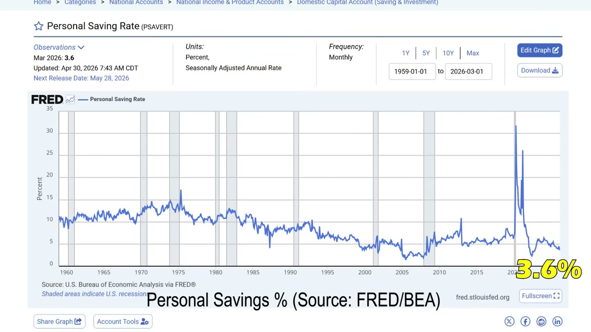
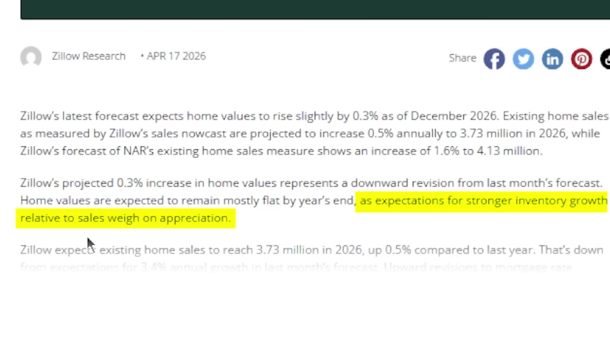
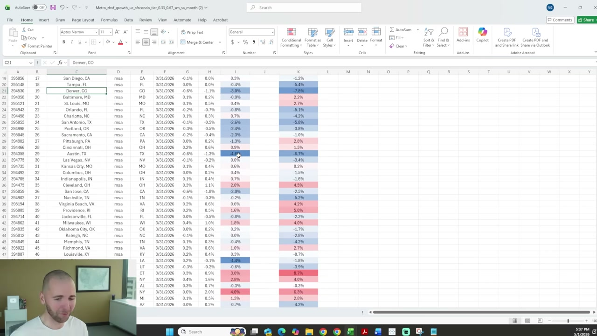
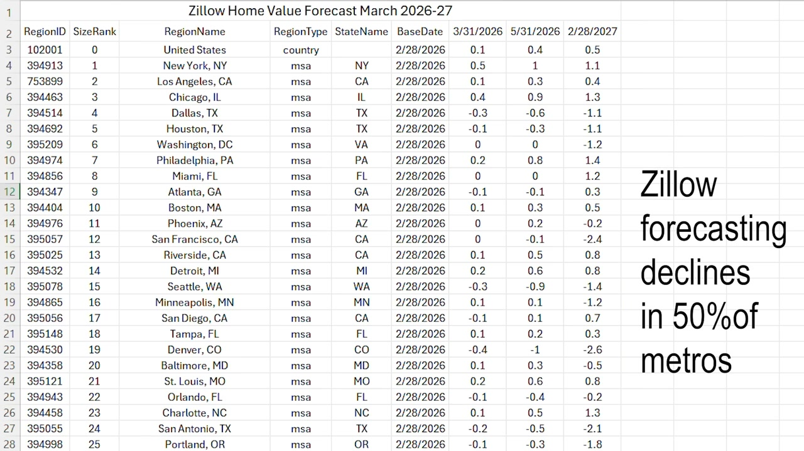
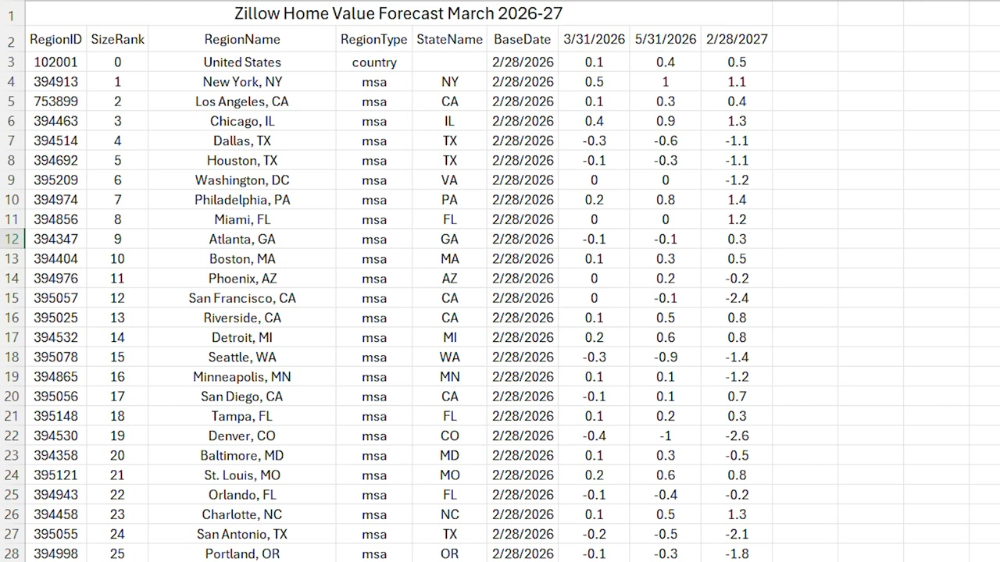
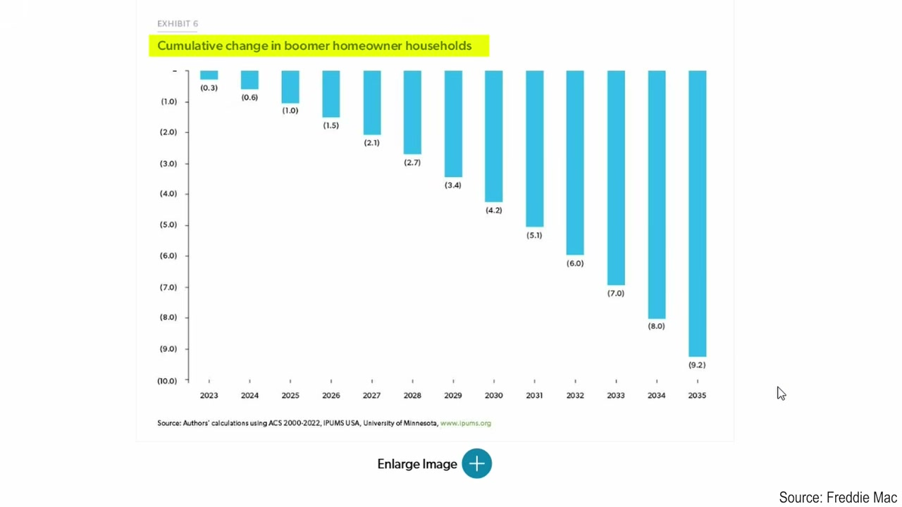
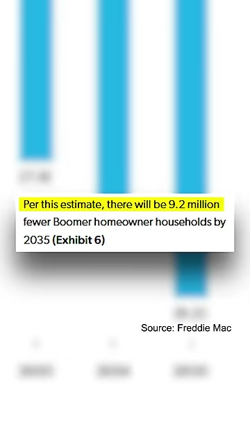
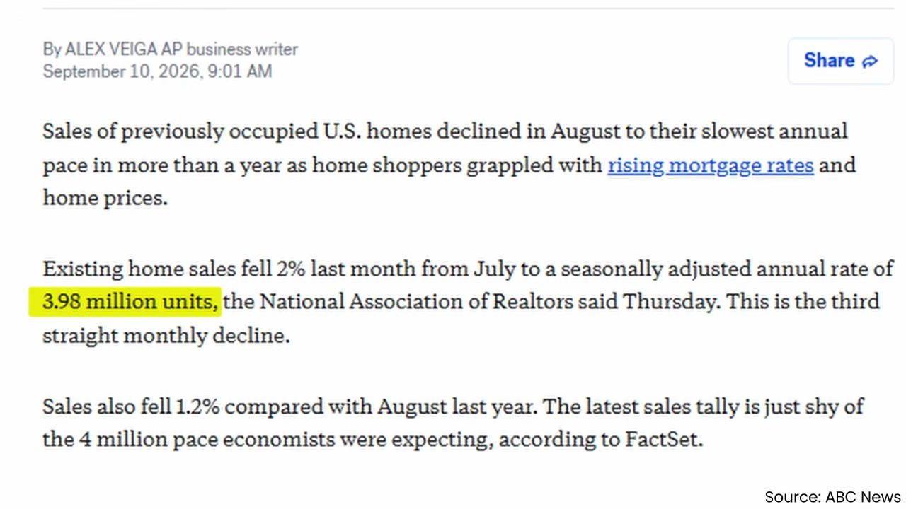
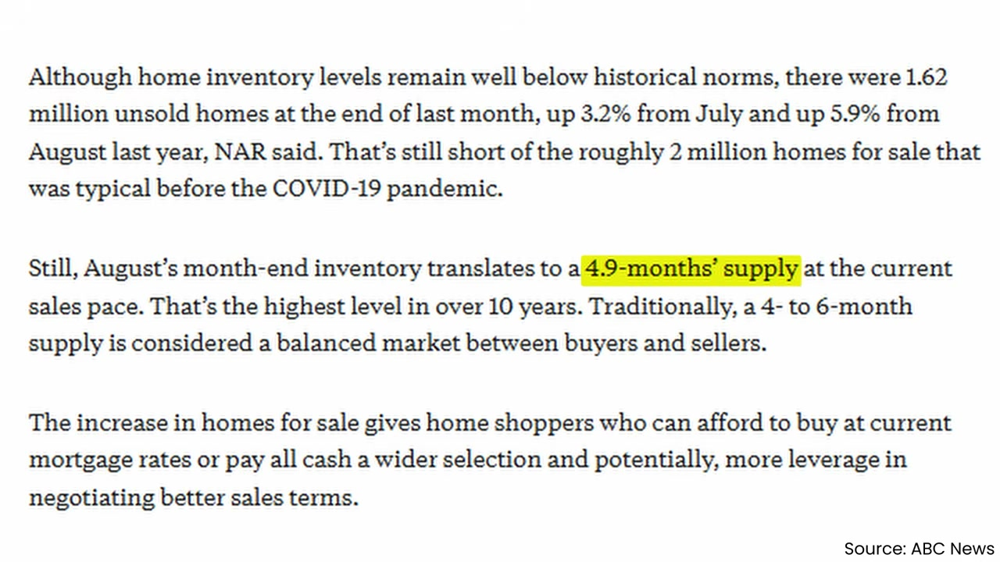

Summary & conclusion
Across 228 videos, the corpus makes one core argument with remarkable consistency: the U.S. housing market has entered a demand depression rather than a price crash, and the two are separating. Existing-home sales run at roughly 3.9–4.2 million annualised through 2026 — levels the RE-V series repeatedly compares to 2008–2009, and in relative terms calls the worst in five decades (rows 1326, 1328, 1351, 1361, 1367, 2419). Yet median prices have barely moved: NAR's May 2026 median was $429,000, up 1.3% year over year, and August set a record for that month (rows 1335, 2589). The RE-V channel's resolution of this paradox is mix and inventory: sales above $1 million rose 11% while the bottom of the market collapsed (rows 1335, 2589), and the pain is concentrated in the South, Mountain West and West Coast, where inventory surpluses of 50–64% have pushed values down, while Northeast and Midwest supply remains 40–70% below normal and prices still rise (rows 1343, 1348, 1355, 1367, 2098).
Where the sources diverge is on cause and severity. The RE-V series builds a structural bear case — overvaluation of 13–22% nationally, a mortgage-payment-to-income ratio near 38%, and a demographic overhang that it argues will produce a decade-long glut (rows 1328, 1335, 1368, 2098). The Richard Taylor wholesaling cluster, transacting daily in the same market, corroborates the mechanics but not the apocalypse: he reports that on-market listings sit long enough to accept 20–30% discounts, that sellers are increasingly underwater and willing to hand over deeds, and that cheap Midwest rentals still clear at 20%+ cash-on-cash returns (rows 1468, 1480, 1618, 1652, 2100). His world is one of illiquidity and seller distress at the margin, not collapsing values everywhere. The third group — Patrick Boyle, Eurodollar University, Felix, and a commercial-real-estate insider — supplies credit context that is in some ways darker than either: record private-credit default rates, a mortgage originator cutting its dividend to zero, and commercial assets trading at 8–80 cents on the dollar (rows 1372, 2039, 2044, 2066).
Where they overstate: RE-V's video titles routinely invoke 1929, 2008 and "biggest crash of all time," while its own data show a national market roughly flat with severe regional dispersion — and the channel itself forecasts only 0.2% national appreciation (rows 1331, 1358, 1366). The wholesaling cluster's income claims ($50,000/month, $100,000/month, 12-year-olds earning $48,000) are self-reported, unaudited, and paired with the admission that only about 5% of participants succeed (rows 1498, 1499, 1502, 1653). The credit channels are the most rigorously sourced but say least about houses. All three converge on one thing: mortgage rates in the 6–7% band have not fallen despite Fed cuts, and that, not price, is the binding constraint (rows 1327, 1367, 1485).
Loudest specific warnings
- RE-V attributes to Bloomberg the claim that plummeting U.S. birth rates will reshape housing over 10–20 years and create a glut with lower prices; the Mortgage Bankers Association projects more deaths than births by 2030, while ReVenture itself forecasts 2034 (rows 1323, 1328, 1800).
- Freddie Mac, as cited by RE-V, estimates nearly 10 million homes will hit the market over the next ten years as baby boomers age out; a Charles Schwab study and the Wall Street Journal are cited for the claim that ~70% of inherited homes are sold (rows 1800, 2090).
- Morgan Stanley's June 16, 2026 research paper concluded housing affordability is unlikely to return to pre-2022 levels (row 1328).
- RE-V reports Fed Chair Kevin Warsh signalling a focus on inflation over cuts, with betting-market odds placing a hike ahead of a cut by end-2026; Business Insider is cited for "Warsh likely isn't coming to the housing market's rescue," and Morgan Stanley for the "Warsh effect" (rows 1327, 1341).
- Michael Burry, as reported by Business Insider, warned Nvidia's stock looks vulnerable and that conditions for an aggressive fall are as strong as at any point in its history; he also flagged that Nvidia's top three customers represent 64% of accounts receivable (row 1331).
- ReVenture's most aggressive metro forecasts: Colorado Springs minus 7.5% for 2026 — the largest downward call for any large U.S. metro — plus Denver minus 6.6%, Cape Coral minus 6%, Seattle minus 4.5%, Dallas–Fort Worth minus 4.5%, Tampa minus 4.9%, Nashville minus 4.1% (row 1364). Later videos push Denver toward minus 10% in some zip codes and Seattle to minus 8% (rows 1406, 1955).
- Zillow, per RE-V, cut its forecast repeatedly: from 1.9% appreciation to 0.5%, then 0.3%, then to minus 0.1% — its first negative print of the year — with 27 of the top 50 metros negative (rows 1338, 1349, 1358).
- The National Association of Home Builders' chief economist expects prices to falter in much of the country as resale adjusts to competition from new builds (row 1344).
- A commercial-real-estate insider forecasts supply absorption and rent growth crossing in late 2027 to early 2028, opening a value-creation window in 2028–2029 (row 1372).
- RE-V forecasts Boston as the first Northeast market to crack, in the second half of 2026 (row 1607).
- Felix reports Goldman Sachs traders using the word "carnage" in internal notes on AI bond markets, the same language used in 2007 (row 2254).
Home prices and inventory dynamics
The central statistic in the RE-V series is turnover, not price. Existing-home sales fell to 3.98 million in March 2026 — a nine-month low and the second-worst March since 2009 — recovered to 4.17 million in May, and fell again to 3.93 million in August, the second-worst August in thirty years (rows 1335, 1351, 2419). J.P. Morgan is cited for the finding that sales relative to household population are the lowest since 1988 (row 1325). ReVenture's own demand index sat at 9–11 out of 100 through early 2026, below anything recorded in 2008–2012 (rows 1326, 1346, 1358, 1361).
Inventory tells the opposite story by region. Nationally, listings rose from roughly 900,000 in December 2025 to 950,000 in March 2026 to 1.1 million by June (rows 1326, 1348, 1368); ABC News is cited for months of supply reaching 4.88 in late summer 2026, an 11-year high (row 2419). But the South and West carry 741,000 listings against 215,000 in the Midwest and Northeast (row 1355). Washington state shows a 64% inventory surplus, Tennessee 58%, Arizona 53%, Texas 52% (row 1355); Tennessee alone reached 34,000 then 37,000 listings, as many as New York State despite a 65% smaller population (rows 1325, 1343, 2098). Connecticut, by contrast, is described as having the nation's biggest shortage, down 70% from pre-pandemic (row 1348), and Manhattan inventory fell to roughly 5,700 units, the lowest since 2017 (rows 1406, 1513).
Price data from the major vendors conflict, and RE-V says so explicitly: Redfin reported record median sale prices while Realtor.com reported record declines in median list prices — a bias toward luxury clearing while the bottom languishes (row 1326). Realtor.com list prices were down 2.5% year over year, the biggest drop since 2017, and later fell for ten straight months (rows 1326, 2098). The Case-Shiller index grew just 0.7% year over year in March (row 1339).
Valuation measures moved through the series. The home price-to-income ratio was quoted at 4.2 in one video, 4.3 in others, against a long-term average of 3.5 — implying roughly 22% overvaluation (rows 1339, 1351, 2098); ReVenture's separate overvaluation model moved from 13% to 15% nationally across the corpus (rows 1340, 1368). Bloomberg is cited for the estimate that prices must fall 15–20%, or incomes rise 15%, to restore historical affordability (row 1339).
Individual loss anecdotes recur throughout and are the corpus's most emotive evidence: a Texas new build from $388,000 to $216,000 (43%), an Atlanta house from $330,000 to $190,000 (48%), a Florida short sale from $330,000 to $200,000 (row 1330, 1332). A Nashville Airbnb bought for over $900,000 listed at $475,000 (row 1342). These are single listings, not indices, and should be read as illustrations of tail outcomes.
Homebuilders and institutional investors
The builder data is where RE-V's bear case is strongest because it comes from filings and the Census Bureau. Builder lot inventory ran above nine months of supply through 2026 — variously reported at 9.1, 9.2, 9.7 and 10.3 months — a level RE-V says has appeared only in the 2008–09, 1980–82 and 1973–75 recessions (rows 1319, 1329, 1333, 1359, 1621, 1774). Breaking that down: roughly 15 months of supply on homes under construction, 3.9 months on completed homes, and 21 months on homes not yet started, a figure RE-V calls unprecedented (row 1329).
Price cuts are documented directly. Lennar cut net selling prices 25–27% from the 2022 peak, from $491,000 to $370,000, and was offering properties as low as $140,000 with five-year fixed mortgages at 3.4% (rows 1319, 1333, 1359, 1366). D.R. Horton cut roughly 12%, raised cancellation rates to 20% from 17%, and offered 4.9% mortgage rates against a 6.5% market (rows 1319, 1774). KB Homes reported a 25% revenue drop (row 1329). Census data show median new-home prices falling from $460,000 in October 2022 to $387,000–$394,000 — a 14–16% cut (rows 1344, 1366, 1774).
The most-repeated structural claim: for the first time since the late 1990s, new builds are cheaper than existing homes — $394,000 versus $434,000, a $40,000 gap, against a 25-year norm where builder homes ran 17–20% more expensive (rows 1344, 1366, 1774, 2420). RE-V notes the transmission is slow because existing homes are 85% of sales and builder homes only 15% (row 1344).
On institutional investors, the corpus records a reversal. Redfin data show investor purchases down more than 50% from peak to the lowest since 2014–15, with Jacksonville down 77%, Atlanta 73%, Charlotte 70%, Orlando 68% and Nashville 67% (rows 1336, 1518). CNBC is cited for Wall Street landlord listings doubling in five months, with net sales exceeding purchases by more than 3,000 homes in 2026 (row 1518). American Homes for Rent was selling at $127–$144 per foot against a $160 replacement cost (row 1360). RE-V attributes the economics to a 4.8% cap rate below the mortgage rate (row 1336). Legislatively, the 21st Century Road to Housing Act passed the House 358–32 and the Senate 85–5 (a separate video cites 89–10), banning purchases by entities owning 350+ homes from January 2027, with penalties of $1 million per house (rows 1326, 1336, 1361, 1518). Bilyeu reports Trump refusing to sign the bill, using it as leverage for the SAVE America Act — a contested framing not reconciled elsewhere in the corpus (row 2208).
Mortgage stress and credit deterioration
This is where RE-V and the credit channels overlap most and where the numbers are most alarming. MBA data put total mortgage delinquencies at 4.4% in Q1 2026, the highest in seven to eight years (row 1322). The FHA book is the epicentre: RE-V cites an 11.88% FHA delinquency rate in Q1 2026, the highest since 2011–12 excluding the lockdown, nearly five times conventional, with 15% on FHA purchase mortgages and 13.7% across all FHA loans (row 1319). ICE Mortgage Monitor is cited separately for seriously delinquent FHA rates of 5–6%, the highest since 2014 (row 1382). Serious delinquency overall was quoted at 1%, the highest since 2017–18 but far below the 5% of 2009–10 — an important qualifier RE-V does include (row 1382).
Underwriting quality is the deeper concern. Fannie Mae's National Mortgage Database, as cited by RE-V, shows government-backed debt-to-income at 44% in Q3 2025 against 35% in the late 1990s and 39% at the 2006–07 peak; back-end DTI on purchase mortgages hit almost 40%, above the 2005–07 bubble (rows 1319, 1328, 1382). D.R. Horton's mortgage mix shifted from 58% conventional in June 2022 to 35%, with FHA rising from 24% to 45%, and a capture rate of 82% with 63% FHA or VA at 0–5% down (row 1319).
Foreclosures are rising from a suppressed base. Q1 2026 filings were reported at 118,000–119,000, up 26% year over year to a six-year high (rows 1342, 1353); ABC News is cited for 21% growth and a 71% increase between 2020 and 2025 (row 1382). Florida leads at one in 2,100–2,300 housing units, with a 44% year-over-year growth rate (rows 1332, 1353, 1600). RE-V attributes the surge partly to the Trump administration ending Biden-era mortgage relief clauses (row 1342). ICE reports 1.1 million borrowers underwater, the highest share since 2018, with Lakeland, Florida at 11% (row 1367). Crucially, Florida's current foreclosure rate of ~0.5% compares with 5–8% in 2009–10 — RE-V's own data undercut its "2008 repeat" framing (row 1600).
The rate lock is the structural fact. J.P. Morgan is cited for over 20% of homeowners at 2.5–3% and 15% at 3–3.5%, against roughly 30% above 5.5% — a bifurcated population with a double peak (rows 1325, 1339). By 2026 there were more 6%-plus mortgages than sub-3% ones, with sub-3% falling from a 25% peak in 2022 to 19% while 6%-plus reached 22% (rows 1342, 1344, 1359, 2098). Consumer credit is deteriorating alongside: Bank of America reported card and debit spending up 6.3% year over year, and the New York Fed is cited for card balances over 90 days delinquent spiking to 13%, the highest since 2008–09, at a 21% average rate (row 1321).
The lender-side evidence is the newest development. United Wholesale Mortgage — the largest originator at $138 billion in H1 2026 per MBA data — reported a $452 million net loss, suspended its dividend for the first time, and fell 49% in a day and 72% over the year (rows 1406, 2066). Eurodollar University reads this as a credit-cycle turning point rather than a housing story, noting origination volumes remain at 2010 levels and that UWM peaked when investors expected Fed cuts that failed to revive demand (row 2066). Fitch is cited for a record 6.3% trailing default rate across 1,300 private-credit borrowers in August, 45% driven by stressed maturity extensions (row 2039). Blue Owl wrote a Loporex loan from par to near zero in months (row 2044). Blackstone capped withdrawals from its $79 billion BDC as defaults rose from 0.6% to 4.7%, was downgraded by Moody's, and limited Q2 redemptions to 5% against 10% requested (row 1337). The Financial Stability Board is cited for $2 trillion in private-credit lending to non-depository institutions as of April 2026 (row 1337).
Patrick Boyle covers the 50-year mortgage proposal: FHFA Director Bill Pulte called it a game-changer, but Dodd-Frank caps qualified mortgages at 30 years, analysts estimate a 75–100bp premium, and after a decade a borrower would hold roughly $11,000 in equity versus $60,000 on a 30-year (row 1845). He notes Japan introduced 50- and 100-year loans during its 1980s bubble and borrowers were trapped in negative equity for decades (row 1845). Eurodollar University reports China announcing 40-year mortgages, which it reads as a bank bailout rather than homebuyer stimulus (row 2051).
Jobs, consumer spending, and economic resilience
The labour-market evidence hardened through the series. BLS reported 92,000 jobs lost in February 2026, 172,000 added in May, and 23,000 cut in July with prior months revised down over 100,000 (rows 1337, 1361, 1485). Full-time employment fell from about 136 million in 2025 to 133.5 million by mid-2026, leaving it only 1.4% above pre-pandemic (row 1485). Labour force participation fell to 61.5%, the lowest in 50 years outside COVID, with the labour force dropping 720,000 in a single month (row 1327). Eurodollar University cites JOLTS hiring below 5.1 million in July with falling quits, and ADP data contradicting the BLS establishment survey (row 2047). LinkedIn's chief economist reported hiring 20% below 2019 (row 1361).
Wage growth is lagging inflation in most readings: 3.4% against 3.8% inflation in May, 2.3% on Indeed job postings, 3.2% hourly in July (rows 1337, 1341, 1485). The savings rate is the recurring alarm — quoted at 3.6% in March, 2.6% in April, 2.7% in June, 3% in July, against a pre-pandemic norm of 5–8% and 10% in the 1970s–90s (rows 1331, 1337, 1345, 1621, 1955).
Consumer spending is where sources disagree most. RE-V quotes Q1 2026 consumption of $21.6 trillion at 68% of GDP but growing only 1.58% annualised in real terms (row 1320). Walmart's comparable sales rose 2.6%, the smallest since 2020; Albertsons fell 0.8% nominal and 4.4% real; Home Depot 1.3% nominal but minus 2.3–2.5% real; Lowe's 0.2% nominal, minus 3.4% real (rows 1646, 1955). Reuters and Bloomberg are cited for July retail sales falling 0.6%, the biggest drop in over a year (rows 1621, 1955). Eurodollar University adds Circle K same-store fuel volumes down 1.6% in the U.S., merchandise up only 1.7%, Walmart cutting prices on 11,000 products, and U.S. Open resale tickets collapsing more than 50% in three days (row 2047). Yet Bank of America reported card spending up 6.3% — which RE-V reads not as strength but as credit-financed consumption outpacing 3.8% income growth (row 1321).
Inflation readings vary across the series from 3.3% in March to 4.3% in May to 3.8%, with Bilyeu citing 4.1% (rows 1321, 1327, 1341, 1354, 2208). Gas prices spiked 21% in March to a $4.10 national average, though WTI later fell back to around $68 (rows 1327, 1354).
Layoffs are increasingly attributed to AI. Oracle announced 20,000–30,000 cuts, Block cut 40% with Jack Dorsey citing AI, Cloudflare cut 20% despite 34% revenue growth, Meta was rumoured at 20%, and Uber is cutting 3,300 (rows 1346, 1356, 1357, 2047). Layoff Hedge tracked nearly 400,000 layoffs to date in 2026 (row 1346). Goldman Sachs is cited by the wholesaling cluster for an estimate that 9% of the U.S. workforce — roughly 15 million workers — could be displaced over the next decade, up from 6–7% (row 2011). Redfin found three in five Americans fear AI will hurt their job prospects and make buying harder (rows 1346, 1357).
The AI CapEx boom and its fragility
RE-V argues AI CapEx is now the economy's load-bearing wall: it accounts for nearly 50% of U.S. GDP growth, with seven companies responsible for 90% of spending and the top five for over 80% (row 1320). Google spent $45 billion in Q2 2026, double the prior year, producing negative free cash flow for the first time in two decades (row 1320). RE-V explicitly links this to housing, arguing the AI boom is capping unemployment despite recessionary signals in builder supply (row 1774).
The fragility case rests on three observations. First, Meta announced in July 2026 it has excess compute and will sell it to Anthropic and OpenAI — a possible signal of slowing CapEx growth (row 1320). Second, the Wall Street Journal is cited for companies switching to cheaper open-source and China-built models (row 1320). Third, GPUs dominate costs while the data-centre structure is only 3–5%, meaning the asset base depreciates fast (row 1320).
Patrick Boyle documents the circularity: Nvidia owned ~5% of CoreWeave and anchored its IPO with a $250 million order; Nvidia pledged up to $100 billion to OpenAI, which will buy Nvidia cards; Amazon invested over $8 billion in Anthropic, which committed to AWS (row 1848). He cites McKinsey forecasting $5.2 trillion in CapEx over five years and Bain estimating $2 trillion in annual AI revenue is needed to justify it, against roughly $13 billion in current revenues (row 1848). Felix reports six companies — Amazon, Meta, Nvidia, Oracle, Alphabet and SpaceX — borrowing more than any sector in history, with one in five dollars of U.S. lending going to AI infrastructure, and AI bond issuance falling from $75 billion in February to $25 billion in July (row 2254). Apollo found zero evidence non-tech companies are making more money from AI (row 2254). Eurodollar University notes a $22 billion syndicated loan for a Blackstone–Alphabet AI venture and SoftBank CDS at their highest since 2023 (row 2039).
The bullish counterweight, largely unrebutted in the corpus: Anthropic's annualised revenue reportedly grew from $4–6 billion to $70 billion, OpenAI reached $37 billion ARR, and Q1 2026 S&P earnings grew 25% with 38% year-over-year growth through May, partly driven by AI cost-cutting (rows 1320, 1331, 1345). Valuation is the hinge — the Shiller CAPE is quoted at 40, 41 and 42 across videos against a long-term average of 16–17.9, a level seen only in 1999–2000 and approached in 1929 (rows 1320, 1331, 1345).
The Federal Reserve's pivot and mortgage rates
The single most consequential claim in the corpus is that rate cuts did not work. The Fed cut seven times from August 2024, taking rates from 5.5% to 3.7%, and buyer demand kept falling (row 1367). Thirty-year mortgage rates stayed in a 6–7% band for four years — quoted at 6.05%, 6.5–6.6%, 6.7%, 6.74%, 6.8% and above 7% at various points in the series (rows 1327, 1341, 1358, 1368, 1485, 2023, 2589).
The pivot narrative centres on Kevin Warsh. RE-V reports him signalling focus on inflation over cuts, with 40% odds of one hike and 40% of two or more by end-2026, and betting markets favouring a hike over a cut (rows 1327, 1341). Upside reports the Fed has already hiked once, with markets pricing 50% odds of another this year and 40% of two, inflation above target for five straight years, and Richmond Fed President Tom Barkin saying inflation risk now exceeds job-loss risk, citing the Iran war and the AI buildout as non-transitory forces (row 2563). Upside also cites Nomura economists finding Warsh's preferred inflation measure predicts no better than standard core (row 2563).
Long rates are the constraint. The 10-year hit 4.9% with RE-V flagging 5% as reachable, and Treasury yields were described as the highest since 2006–07; the 30-year hit a 19-year high (rows 1341, 2023, 2098). RE-V notes U.S. debt above $40 trillion and debt-to-GDP doubling from 60% to 120% since 2008, and Japan's yields at their highest since 1994 (rows 1341, 2023). Zillow is cited for the view that deficits, an oil shock and AI debt put a floor under how far mortgage rates can fall (row 2098).
RE-V's most useful practical point: price cuts move payments far more than rate cuts. A $100,000 reduction on a $480,000 Nashville house cuts the monthly payment from $3,070 to $2,300 — 25% — whereas a full percentage point off the mortgage rate saves only about $200 (row 1327). Zillow's framing is that mortgage cost as a share of income must fall from 38% to the long-term median of 27% before buyers return (row 1349).
Migration and regional divergence
Bank of America Institute's internal account data, as reported by RE-V, produced the corpus's most counterintuitive finding: Miami, Orlando and Tampa recorded some of the biggest net move-outs of any U.S. cities in Q1 2026, with Miami fourth and Orlando sixth — larger losses than New York, Chicago, Detroit, San Francisco or Baltimore (row 1334). Indianapolis, Salt Lake City, Raleigh, Columbus and Louisville gained most, driven by affordability (row 1334). Overall mobility is falling: interstate and inter-MSA moves down about 15%, turnover down 10–15% over two years, and total migration down roughly 30% from 2022 levels (rows 1334, 1365).
The Sun Belt reversal is documented repeatedly. Migration into the South in 2025 was at its lowest in 35 years, down about two-thirds from 2022 and near the 2009–2013 post-GFC lows (rows 1324, 1347). Census data cited via ReVenture show Florida domestic migration down 80–93% from the pandemic peak — 22,000 net in 2025 against 310,000 in 2022 — and Texas down 70%, its lowest since 2005 (rows 1334, 1347, 1365, 1367, 2419). Colorado lost 12,000 people in 2025 after three decades of gains; Nevada fell to 15-year lows; Las Vegas inflows dropped 70% in seven years (rows 1347, 1562).
The Midwest recorded its first positive inbound migration in 35 years, the first on record going back to 1991, with Bank of America finding high-income households moving disproportionately to Indianapolis, Pittsburgh, Oklahoma City, Cincinnati, Milwaukee, Grand Rapids, Cleveland and Minneapolis (rows 1324, 1347). Chicago had its best migration year in four decades; Pittsburgh added 1,600 people in 2025, reversing forty years of decline; Albany is drawing arrivals from New York City and California (rows 1386, 1404, 1592). The affordability arithmetic explains it: mortgage costs consume 28–29% of local income in Ohio, Indiana, Iowa, Kentucky and West Virginia against 40%+ on the West Coast and 62% in California (rows 1347, 1349).
California lost 229,000 net people in 2025 — the biggest of any state, though an improvement from 470,000 in 2021 — with Los Angeles County alone losing nearly 54,000 between 2024 and 2025 per census data reported by KTLA (row 1350).
Immigration is the wildcard. Border counters in 2025 were at their lowest since 1969, near 50-year lows, and RE-V cites John Burns Consulting for the claim that 100% of renter demand from 2022 to 2024 came from immigration (rows 1323, 1368, 2419). A related policy change: H-1B holders can no longer use FHA mortgages, which RE-V links to a 26% two-year price decline in Frisco, Texas (row 2419).
Demographics
The demographic thesis is RE-V's longest-horizon argument and its most contested. The channel reports U.S. birth rates down 60–65% over 35–40 years to barely over 1% of population, with the death rate at 0.91% (rows 1323, 1328, 1385). The MBA projects more deaths than births by 2030; ReVenture says 2034 (rows 1323, 1328, 1800). Nearly 20 states are already in organic decline, including Florida, Ohio, Michigan, Pennsylvania and West Virginia, with Maine and Vermont seeing births 30% below deaths and West Virginia at a 0.68 birth-to-death ratio (rows 1323, 1800). Florida's ratio fell 50% in thirty years, from 1.5 to below 1.0 (row 1800).
International comparisons anchor the argument: Japan's nominal home prices fell 50–53% from 1990–91 to 2010; China's residential prices are down 23% from the 2021 peak with population declining from 2023; Canada's population fell for a second straight quarter at end-2025, the first since World War II, with prices down roughly 20% over four consecutive years per the Royal Bank of Canada (rows 1323, 1344, 1385).
The supply-side corollary is the "silver tsunami." Freddie Mac's estimate of nearly 10 million homes reaching the market over ten years is the headline; the population aged 75+ will nearly double in twenty years (rows 1800, 2090). RE-V identifies Florida and Arizona as most exposed, and profiles Punta Gorda — median age 65, 36% of homeowners over 75, birth-to-death ratio 0.34 — where values are down 22–27% (rows 1800, 2090, 2391). A commercial-real-estate insider and Patrick Boyle both cite the median first-time buyer age reaching 40, implying extended renting (rows 1372, 1845).
The counterargument the corpus does not fully engage: none of these forecasts explain the 2026 price data, which is driven by rates and regional supply, not by deaths.
Regional spotlights
Florida is the corpus's most-covered market and its most internally inconsistent. Statewide values are variously reported down 3.7%, 4.6%, 5% and 7% over two years (rows 1334, 1353, 1362, 2022, 2099). The metro dispersion is severe: Punta Gorda down 22–27%, Cape Coral down 15–20%, Jacksonville and Deltona down 19–20%, Sarasota 14–16%, Lee County 17% — while Miami-Dade is up 12.6% since mid-2022, Tallahassee up 7% and Broward up 4% (rows 1344, 1585, 1600, 1800). Inventory reached 158,000–162,000 in early 2026, then fell 14% year over year by July 2026 — the largest inventory decline of any state — as sellers withdrew (rows 1353, 1362, 1585). Florida sales rose about 15% year over year to 36,000 in June 2026 while remaining 30% below pandemic highs (row 1585). ReVenture called Cape Coral, once labelled the worst market in America by the Wall Street Journal, 10% undervalued with June sales above the long-term average (row 1616). This is the clearest example in the corpus of a market where the bear case has largely played out.
Austin is the benchmark crash: values down 24–27% from the mid-2022 peak, from $553,000 to $420,000 per Zillow, with apartment rents down 21–22% and typical rent back to $1,250 from $1,650 (rows 1324, 1344, 1364, 1380, 2419). ReVenture subsequently called Austin 1.4% undervalued and a buy, while still forecasting another 5–6% decline — an internal tension worth noting (row 1380).
Other markets: Seattle inventory hit a 14-year high at 12,000 listings, 65% above the July norm, with a minus 8% forecast, driven by Microsoft, Amazon and Zillow layoffs (rows 1381, 1406, 1786). Denver values fell 3.1%, the biggest drop since 2008, with apartment rents down 6.4% per RealPage and new-lease rents down 18% in Q4 2025 per Equity Residential (row 1364). Portland is down 15–20% over four years with demand at 15-year lows (row 1773). Las Vegas sales are at 2007 levels, down 40–45% from peak, with inventory up 80% to a decade high (rows 1352, 1367, 1562, 2023). Nashville reached 12,000+ listings against a 7,500 norm — a 60% surge — and Redfin ranked it the second-strongest buyer's market with 129% more sellers than buyers (rows 1406, 1485, 1519). Raleigh inventory hit a decade high with new builds down as much as 16% (row 2327). Frisco and Collin County, Texas are down 26% and 10% respectively (row 2419).
On the upside: Milwaukee leads large metros at plus 5.2%; Alaska leads states at 5.8%, ahead of New York, North Dakota, Illinois and Connecticut; Syracuse and Rochester top Zillow's forecast at 4.8% and 3.9%; Chicago is forecast at 6.2% on 14,000 listings versus 40,000 pre-pandemic (rows 1327, 1338, 1406, 1643, 1914). San Francisco is the outlier: rents up 11% year over year, home values up nearly 10%, the lowest vacancy in a decade, with the LA Times reporting the AI boom pushing the median above $2 million — all while BLS data show the city's job market still below pre-pandemic levels (rows 1336, 1350, 1572).
Condos are the leading indicator RE-V watches most closely, citing the Wall Street Journal for the worst condo conditions since the last crash: Cape Coral down 30%, Oakland 29%, St. Petersburg 27%, downtown Atlanta over 20%, Fort Myers down 30% (rows 1363, 1384, 1802). HOA fees of $400–$1,500 a month plus special assessments — one St. Petersburg unit cut 75% from $1 million to $250,000 with a $300,000 assessment — are the mechanism (rows 1363, 1802).
Internationally, Patrick Boyle reports New Zealand prices down 16% nationally and 27% in Wellington, roughly a third in real terms, with over 2,000 construction firms failing since 2022 and 200,000 New Zealanders leaving for Australia in three years per the Financial Times (row 1816). He also documents Canada's decline: national income per capita falling from 80% to 70% of the U.S. level, productivity diverging 26 points since 1997, youth unemployment at 14.7%, and average home prices rising 179% from $237,000 in 2005 to $661,000 (row 1825).
The practitioner view: transacting inside the correction
The Richard Taylor cluster is the corpus's ground truth, and it broadly confirms RE-V's diagnosis while inverting the conclusion: illiquidity is opportunity. Taylor's core claim is that roughly 11,000 homes sell per day (one video says 13,000) against 1.4 to 4 million Zillow listings, and that a wholesaler needs only a handful of repeat buyers to build an income (rows 1467, 1481, 1499, 1527, 1916, 2094). His stated volume is 15–25 deals a month at average assignment fees of $7,000–$8,000, with individual fees ranging from $3,000 to $44,000 and outliers of $50,000 and $102,000 (rows 1468, 1471, 1481, 1587, 1618, 2034).
His underwriting is where the macro shows up. Taylor requires roughly 20% cash-on-cash for rental buyers using the formula (rent × 0.8 − PITI) × 12 ÷ total cost, and states plainly that real estate "no longer works as an investment in 90% of the United States" because mortgage payments exceed rents (rows 1469, 1499, 1918, 2011). DSCR lenders won't fund below $60,000–$65,000, and single-family above $90,000 or multifamily above $150,000 typically won't cash flow (rows 1501, 1524). This is the same rent-versus-buy gap RE-V quantifies at 40% nationally, $2,600–$2,800 to own against $1,920–$1,950 to rent (rows 1346, 1357, 1368).
The result is a geographic concentration almost perfectly inverse to RE-V's crash list: Detroit, Cleveland, Akron, Dayton, Toledo, Columbus, Canton, Memphis, Birmingham, St. Louis, Indianapolis, Milwaukee — Midwest and mid-South, $60,000–$200,000, bought at roughly 70% of list (rows 1471, 1480, 1502, 1593, 1622). He explicitly evaluates and rejects markets on crime and cash-flow grounds, and identifies Indianapolis as his strongest match on diversified employment and cap rates (rows 2092, 2100).
The creative-finance boom is the most direct practitioner evidence of seller distress. Taylor reports acquiring 23–30 properties at rates of 0–3.6%, with roughly 21 of 25 taken subject-to and the loan left in the seller's name (rows 1474, 1479, 1501, 1561). He uses a trust structure — the seller retains ~10% while the buyer takes control — to avoid triggering due-on-sale, with an attorney he names claiming roughly 3,000 such transactions since 2004 (rows 1561, 1651, 1922). Deed-of-trust reversion clauses return the property to the seller after two missed months without foreclosure (rows 1479, 1625, 1650, 1651). The sellers are the underwater cohort RE-V describes statistically: a nursing student and veteran who bought for $235,000 three years ago, owes $230,000 on a home now worth $207,000, and would need $10,000 to sell conventionally (row 1618). In San Antonio he counts 4,000 listings whose owners have 20% equity or less (row 1649). He reports three $0-down acquisitions in a single week (row 1649).
Regulation is tightening around him. Ohio now requires wholesalers to disclose their status on a separate document, enforced by title companies, which Taylor says has made on-market wholesaling significantly harder; Cleveland has its own rule; Illinois limits in-state LLCs to one deal a year, which he attributes to NAR influence; Oklahoma, Philadelphia, South Carolina and Oregon also require disclosure, while Michigan does not (rows 1466, 1468, 1471, 1622, 1652). He reports using specific-performance suits rather than memorandums to enforce contracts in Texas and Florida (row 1469). His original YouTube channel was banned in January 2026 over an earnings claim (row 1481).
Two cautions. First, Taylor himself puts the success rate at about 5% of his roughly 130,000-member community, with only about 1% attending live sessions (rows 1499, 1502). Second, several forward-looking claims in the cluster are assumptions dressed as facts: 6% annual appreciation "on average over the past 200 years," a $200,000 house reaching $1 million in thirty years, and a median U.S. price of $1 million by 2050 attributed to NAR's chief economist (rows 1649, 1650, 1651, 2011). Social Security exhaustion dates are cited variously as 2031, 2032 and Q4 2032 per the Trustees' June 2026 report (rows 1649, 1650, 2011, 2092). These are marketing premises for the "renting costs $750,000 over 30 years" argument, not findings (rows 1651, 1788, 2011).
Where the practitioner view most usefully corrects the macro view: Taylor's deal flow shows transactions clearing every day at prices that work, in markets RE-V rarely covers, funded by private lenders at 13–15% and DSCR loans around 7% (rows 1587, 1602, 1625, 2010). The market is not frozen — it has repriced access. The commercial-real-estate insider makes the parallel point at institutional scale: multifamily supply hit a 50-year high in 2025, buildings developed at $400,000 a unit are worth $250,000–$275,000, one fully vacant asset bought at $90,000 a unit is offered at $8,000 — and that is precisely the setup for a 2028–2029 value-creation window (row 1372).
Evidence — key claims and their sources
Each key claim is paired with the source the video attributes it to — linked to the actual report or reputable coverage — and, where captured, a screenshot of the on-screen source at the moment the claim is made. ✓ = specific source page verified; ○ = the attributed organisation's page, but the exact figure shown could not be independently confirmed.
D.R. Horton issues CANCELLATION warning (Fannie mortgages collapse 50%)
Builder Online ✓ — According to Builder Online, D.R. Horton had 87,000 home closings in 2025 and Lennar had 82,000, making them the number one and number two homebuilders. Builder Online ↗ (row 1319)

Fannie Mae's National Mortgage Database ○ — According to Fannie Mae's National Mortgage Database, the debt-to-income ratio for government-backed mortgage originations was 44% as of the third quarter of 2025. Fannie Mae's National Mortgage Database ↗ (row 1319)

Meta CEO warns of AI bubble. it's like 1999, but worse.
Axios ✓ — Google went into negative free cash flow territory in the second quarter of 2026, the first time in two decades. Axios ↗ (row 1320)

Wall Street Journal ✓ — Companies big and small are mixing AI models and switching to cheaper alternatives, changing the economics of the industry. Wall Street Journal ↗ (row 1320)

Bank of America issues CREDIT MAXXING warning. 2006 all over again.
Bank of America ✓ — Credit card and debit card spending in America surged 6.3% year-over-year in June, the biggest jump in over four years. Bank of America ↗ (row 1321)

New York Federal Reserve ✓ — The percentage of credit card balances over 90 days delinquent has spiked to 13%, the highest level since the 2008-2009 financial recession. New York Federal Reserve ↗ (row 1321)

WSJ drops major warning. Six-figure losses emerge.
The Wall Street Journal ○ — The Wall Street Journal reported that pending home sales in America fell in June 2026, marking the biggest monthly drop in contract signings that year. The Wall Street Journal ↗ (row 1322)

Mortgage Bankers Association ✓ — The Mortgage Bankers Association reported that mortgage delinquencies rose to 4.4% of all mortgages in the first quarter of 2026, the highest rate in seven to eight years. Mortgage Bankers Association ↗ (row 1322)

Bloomberg warns of Demographic CRASH. 1929 all over.
Bloomberg ✓ — Bloomberg reports that the plummeting birth rate in America will completely reshape the housing market over the next 10 to 20 years. Bloomberg ↗ (row 1323)

Mortgage Bankers Association ✓ — The Mortgage Bankers Association argues that by 2030, America will have more deaths than births. Mortgage Bankers Association ↗ (row 1323)

Fannie Mae warns of MASS bankruptcies. (80% migration collapse)
Fannie Mae and Freddie Mac ✓ — According to Fannie Mae and Freddie Mac, the default rate on multifamily mortgages has hit its highest level since 2009-2010. Fannie Mae and Freddie Mac ↗ (row 1324)

ApartmentList ✓ — According to ApartmentList data, rents in Austin, Texas are down 21% from the middle of 2022 for apartments. ApartmentList ↗ (row 1324)

J.P. Morgan drops BOMBSHELL report. America's map just flipped.
J.P. Morgan ✓ — Home sales relative to the U.S. household population are now at the lowest level going back to 1988. J.P. Morgan ↗ (row 1325)

J.P. Morgan ✓ — Over 20 percent of U.S. homeowners have a mortgage rate between 2.5 to 3 percent. J.P. Morgan ↗ (row 1325)

The Dam has broken. Biggest losses since 2010.
Realtor.com ✓ — Realtor.com reports that median list prices are down 2.5% year-over-year, the biggest drop since 2017. Realtor.com ↗ (row 1326)

NAR ○ — The NAR reports existing home sales at 4.17 million annualized in May 2026, close to the lowest level ever. NAR ↗ (row 1326)

Fed reveals shocking U-TURN. ("largest sell signal in years")
Morgan Stanley ✓ — Morgan Stanley projects that mortgage rates will likely be volatile and stick around their current elevated levels under the Warsh effect. Morgan Stanley ↗ (row 1327)

Business Insider ✓ — Business Insider reports that Kevin Warsh likely isn't coming to the housing market's rescue. Business Insider ↗ (row 1327)

Morgan Stanley drops FINAL warning. The reset has begun.
Morgan Stanley ✓ — Morgan Stanley concluded that housing affordability is unlikely to return to more favorable levels of the past, with many owners locked into low rates. Morgan Stanley ↗ (row 1328)

Fannie Mae ✓ — According to Fannie Mae, the debt-to-income ratio for homebuyers closing on or refinancing mortgages in the U.S. is now 40 percent. Fannie Mae ↗ (row 1328)

Bloomberg CANCELS U.S. Housing Market. (45% Losses Emerge)
Bloomberg ✓ — Bloomberg reported an unexpected drop in new home sales in May 2026. Bloomberg ↗ (row 1329)

U.S. Census Bureau ✓ — According to the U.S. Census Bureau, there was 10.3 months of supply on builder lots in May 2026. U.S. Census Bureau ↗ (row 1329)

Zillow reports shocking housing U-TURN. 40% losses emerge.
Showing Time ✓ — Home tours have dropped by almost 35 to 40% in the last month and a half according to Showing Time data. Showing Time ↗ (row 1330)

Wall Street Journal ✓ — House payments for existing owners have increased 40% in the last six years, from approximately $1,700 per month in 2019 to $2,400 per month at the end of 2025, according to Wall Street Journal analysis. Wall Street Journal ↗ (row 1330)

Michael Burry issues FINAL warning. ("it's like 1929 all over")
Business Insider ✓ — Michael Burry warned that Nvidia's stock losses look vulnerable and that AI token maxing trends won't last into the future. Business Insider ↗ (row 1331)

Michael Burry ✓ — The top three of Nvidia's customers are 64% of Nvidia's accounts receivable, meaning almost two-thirds of Nvidia's revenue comes from three customers. Michael Burry ↗ (row 1331)

ICE issues massive foreclosure warning ($150,000 short sales in Florida)
Realtor.com ✓ — Foreclosure filings rose 14% nationwide, the biggest spike since the pandemic started. Realtor.com ↗ (row 1332)

Fannie Mae ✓ — According to Fannie Mae's National Mortgage Database, 22% of U.S. mortgages are over 6% rate while 19% are below 3% rate. Fannie Mae ↗ (row 1332)

U.S. Housing Market DOWNGRADED (Lennar reports biggest drop since 2007)
Lennar ✓ — Lennar cut their net price on new home deliveries by 25% in the last four years. Lennar ↗ (row 1333)

U.S. housing market data ✓ — As of April 2026, the new home builder market had 9.1 months of supply, the highest inventory level since the 2008-2009 financial crisis. U.S. housing market data ↗ (row 1333)

Bank of America just reported a massive MIGRATION COLLAPSE (the U.S. Map flips again)
Bank of America Institute ✓ — In the first quarter of 2026, metros like Miami, Orlando, and Tampa had some of the biggest net move-outs and population loss of any cities in the US. Bank of America Institute ↗ (row 1334)

Bank of America ✓ — The turnover rate of renters and homeowners moving has dropped by about 10 to 15% in the last two years. Bank of America ↗ (row 1334)

The U.S. Housing Market just FLIPPED (NAR reports new buyer statistics)
CNBC ✓ — Home sales surged in May to the highest level since December, up 3.2% year over year, according to CNBC. CNBC ↗ (row 1335)

National Association of Realtors ✓ — The National Association of Realtors reported that existing home prices were up 1.3% year over year to around $429,000 for the median sale price. National Association of Realtors ↗ (row 1335)

The Biggest Exodus since 2008 is happening now (Redfin reports 70% drop in FL)
Politico ✓ — According to Politico, lawmakers voted to crack down on Wall Street landlords with a blanket prohibition on purchases by large institutional investors who own at least 350 single-family homes. Politico ↗ (row 1336)

RealPage ✓ — According to RealPage, San Francisco has the highest apartment rent growth at 11% year over year. RealPage ↗ (row 1336)

Blackstone DOWNGRADED. $2T private credit collapse underway.
Financial Stability Board ○ — Private credit's $2 trillion boom is now raising global stability fears. Financial Stability Board ↗ (row 1337)
Wall Street Journal ○ — The rising financial strain on managers of large private credit funds is highlighted by investors continuing to ask for their money back. Wall Street Journal ↗ (row 1337)
Zillow updates 2026 forecast (and sellers are not happy)
Realtor.com ○ — Home purchase loans plunged to a 12-year low in the first quarter of 2026 as high mortgage rates crushed affordability. Realtor.com ↗ (row 1338)
Zillow ✓ — Zillow downgraded its 2027 housing market forecast into negative territory, forecasting prices to decline 0.1% over the next year. Zillow ↗ (row 1338)
The Biggest Mortgage Collapse in U.S. History just got worse
CNBC ○ — Refinance demand dropped 18% for mortgages, the lowest level since 2025. CNBC ↗ (row 1339)
Bloomberg ○ — Home prices would have to fall 15 to 20% or incomes rise 15% for affordability to reach historical levels. Bloomberg ↗ (row 1339)
Zillow just got turned off. Houses are disappearing.
Speaker's poll of audience ○ — Zillow has approximately 250 million users per quarter. (row 1340)
The Fed Has a New Problem. (No one can afford anything)
Indeed ○ — Indeed released a report showing wage growth for jobs posted on Indeed is up only 2.3 percent year over year. Indeed ↗ (row 1341)
Zillow ○ — Zillow's single family rent index is 2.7 percent up year over year and multifamily index is 1.4 percent. Zillow ↗ (row 1341)
The U.S Mortgage Bubble has popped (WSJ reports 26% spike in repos)
Wall Street Journal ○ — Foreclosure filings reached 119,000 in the first quarter of 2026 and are up 26% year over year, with high housing costs now leading to foreclosures being at a six-year high. Wall Street Journal ↗ (row 1342)
Wall Street Journal ○ — A Biden-era program that prevented distressed borrowers from losing their homes has been rolled back, causing foreclosures to increase. Wall Street Journal ↗ (row 1342)
U-Haul trucks are turning around. The Exodus is OVER.
Realtor.com ○ — Realtor.com updated inventory data shows skyrocketing inventory across states like Texas, Tennessee, Colorado, and Arizona with listings at the highest level in a decade. Realtor.com ↗ (row 1343)
ReVenture app ○ — ReVenture app data shows median incomes in Tennessee, North Carolina, and South Carolina are less than $80,000, below the U.S. average. (row 1343)
The Biggest Reset since 2009 is starting (National Association of Builders WARNING)
US Census Bureau ○ — Builders have cut new home prices by 16% from the 2022 peak, with median new home prices falling from $460,000 in October 2022 to $387,000 in 2026. US Census Bureau ↗ (row 1344)
Royal Bank of Canada ○ — According to the Royal Bank of Canada, March 2026 marked the fourth consecutive year of declining home prices in Canada, with prices down nearly 20% from the 2022 peak. Royal Bank of Canada ↗ (row 1344)
Michael Burry releases biggest warning yet. ("it's like the final months of 1999")
Robert Shiller ✓ — The Shiller P/E ratio on the U.S. stock market is currently at 42, a level only previously seen in 1999-2000, compared to a historical average of 16-17 over 130 years. Robert Shiller ↗ (row 1345)

Federal Reserve and Bureau of Economic Analysis ○ — U.S. personal savings rate has fallen to 3.6% as of March 2026, sourced from the Federal Reserve and the Bureau of Economic Analysis. Federal Reserve and Bureau of Economic Analysis ↗ (row 1345)
No one expected this. REDFIN reports shocking 2026 housing market flip.
Redfin ○ — Redfin reported that U.S. pending sales hit their highest level since September 2022, up 7.7% year over year. Redfin ↗ (row 1346)
National Association of Realtors ○ — The National Association of Realtors reported that pending sales figures in the first quarter of 2026 were about 30% below the long-term average. National Association of Realtors ↗ (row 1346)
Bank of America drops bombshell MIGRATION report (the U.S. map just flipped)
Bank of America ○ — Bank of America found using internal data that high-income households are disproportionately moving to Midwest metro areas including Indianapolis, Pittsburgh, Oklahoma City, Cincinnati, Milwaukee, Grand Rapids, Cleveland, and Minneapolis from Q1 2025 to Q1 2026. Bank of America ↗ (row 1347)
Bills are piling up. Realtors issue warning.
National Association of Realtors ○ — Pending home sales index fell to 73.7 in March 2026, the lowest level ever recorded for any March. National Association of Realtors ↗ (row 1348)
Zillow releases 2026 forecast. (Avoid these cities)
Zillow ✓ — Zillow forecasts home values to rise only 0.3% over the next year, representing a downward revision from last month's forecast. Zillow ↗ (row 1349)

Zillow ✓ — Zillow expects home prices to drop by March 2027 in major metros including Los Angeles, Dallas, Houston, D.C., Atlanta, Phoenix, San Francisco, Seattle, Minneapolis, and Denver. Zillow ↗ (row 1349)

California's about to implode (2026 homebuyer warning)
KTLA ○ — Los Angeles County saw the largest population decline in the U.S., losing nearly 54,000 people between 2024 and 2025 according to census data. KTLA ↗ (row 1350)
LA Times ○ — The AI boom is catapulting San Francisco's median home price above 2 million, up 18 percent year-over-year, with limited inventory intensifying competition among buyers. LA Times ↗ (row 1350)
The Biggest Housing Collapse in U.S. History just got worse. (NAR warning)
National Association of Realtors ○ — Existing home sales dropped in March 2026 to 3.98 million, a nine-month low and the second worst reading for March since 2009. National Association of Realtors ↗ (row 1351)
Realtor.com ○ — Weak job growth dampened buyer confidence and contributed to falling home sales in March 2026. Realtor.com ↗ (row 1351)
The exodus has begun.
Reuters ○ — Las Vegas posted its sharpest annual visitor drop since 1970 (excluding the pandemic) in 2025, with 3.5 million fewer visitors and a 7.5% drop from 2024. Reuters ↗ (row 1352)
Redfin ○ — Home sales demand in Las Vegas is at its lowest level since 2007, according to data from Redfin and Vegas Fox 5. Redfin ↗ (row 1352)
People have stopped paying their mortgage
Adam (research firm) ○ — There were 118,000 U.S. properties with a foreclosure filing during the first quarter of 2026, up 26% from a year ago. (row 1353)
ReVenture app ○ — Florida's housing market is down 4.6% year-over-year through February 2026, and was down 1.8% in early 2025. (row 1353)
The Biggest Inflation Inversion in U.S. History is about hit (prepare for DEFLATION)
CNBC ○ — Consumer prices rose 3.3% year-over-year in March as energy prices spiked, with the monthly increase in inflation being one of the highest on record going back 40 years. CNBC ↗ (row 1354)
CoreLogic ○ — CoreLogic data shows asking rents for single-family homes were up only 1.3% year-over-year to start 2026, the lowest single-family rent growth since 2009-2010. CoreLogic ↗ (row 1354)
The U.S. Housing Market just broke in two
The Atlantic ○ — The Atlantic published an article about how the Midwest became the place to move, mostly about affordability. The Atlantic ↗ (row 1355)
CEOs reveal what's about to happen to your job
ReVenture app ○ — Pre-foreclosure filings are surging in many states, with Florida showing a 72% year-over-year increase. (row 1356)
Redfin ○ — Three out of five Americans are fearful that AI could hurt their job prospects and could lead to making buying a home harder. Redfin ↗ (row 1356)
This has never happened before. (1 in 7 houses terminated)
Redfin ○ — In February 2026, almost 14% of homebuyers on pending sales canceled contracts, the highest rate in Redfin's data set going back a decade. Redfin ↗ (row 1357)
Redfin ○ — Redfin found that three out of five Americans believe AI is going to reduce their ability to get a job in the future and make it harder to buy a house, with 59% agreeing that advances in artificial intelligence will eliminate jobs and make it harder for people to afford homes. Redfin ↗ (row 1357)
U.S. Housing Market CANCELLED. (Zillow cuts forecast)
Zillow ✓ — Zillow downgraded its 2026 housing forecast, now forecasting prices to drop in roughly half of U.S. cities. Zillow ↗ (row 1358)

Zillow ✓ — Zillow's most recent forecast shows 0.5% price appreciation in 2026, down from 1.9% three months ago. Zillow ↗ (row 1358)

Census Bureau releases biggest housing warning in 15 years (contracts plummet)
realtor.com ○ — New home sales just had their biggest drop in 13 years. realtor.com ↗ (row 1359)
National Association of Home Builders ○ — The average replacement cost for a new build home is $162 per square foot. National Association of Home Builders ↗ (row 1359)
Wall Street CEOs are liquidating houses
Zillow ○ — Zillow reports that accidental landlords are surging in the U.S., with the biggest increases in Denver, Austin, Dallas, Nashville, and Tampa. Zillow ↗ (row 1360)
ReVenture app ○ — Data from ReVenture app shows values in the Mableton area of Atlanta are down 3-5% in the last year. (row 1360)
It's a Depression (Biggest Housing Market Crash since 2009 underway)
National Association of Realtors ○ — The National Association of Realtors reported 4.09 million existing annualized home sales in February 2026, the worst sales volume for February since 2009. National Association of Realtors ↗ (row 1361)
Bureau of Labor Statistics ○ — The Bureau of Labor Statistics reported that the US lost 92,000 jobs in February 2026. Bureau of Labor Statistics ↗ (row 1361)
40% firesale in Florida. (It’s way worse than anyone expected)
Adam Data Solutions ○ — According to Adam Data Solutions, foreclosures in Florida are now at the highest level of any state in America. (row 1362)
Realtor.com ○ — According to Realtor.com, migration into Florida is down 93% in the last three years, the lowest since 2009-2010. Realtor.com ↗ (row 1362)
The Biggest Crash since 2008 is underway (HOAs bankrupt)
Wall Street Journal ○ — According to the Wall Street Journal, the US condo market is in its worst condition since the end of the last crash, with values officially declining across the country. Wall Street Journal ↗ (row 1363)
Wall Street Journal ○ — Wall Street Journal reports condo values are down 1.9% year over year, with sellers reporting significant losses on sales. Wall Street Journal ↗ (row 1363)
Top 10 Cities where Home Prices will Crash in 2026
Zillow ○ — Austin home values have declined 24% from June 2022 ($553,000) to January 2026 ($420,000). Zillow ↗ (row 1364)
RealPage ○ — Denver apartment rents are down 6.4% year over year, the second biggest drop in the US next to Austin. RealPage ↗ (row 1364)
U-Haul issues mass migration warning in 2026 (housing market just flipped)
Bank of America ○ — Metro-to-metro and state-to-state migration is down about 30% from where it was in 2022. Bank of America ↗ (row 1365)
Census Bureau ○ — Domestic migration into Florida is down 80% from three years ago and into Texas is down 70%. Census Bureau ↗ (row 1365)
The biggest crash of all time is underway. (2026 price wars have begun)
U.S. Census Bureau ○ — The median sale price of a new build house is down almost 15% from the peak in October 2022, according to data from the U.S. Census Bureau. U.S. Census Bureau ↗ (row 1366)
Speaker's analysis ○ — Existing home sales are down 42% from the pandemic peak, 27% from pre-pandemic norms, and are still down 4% year over year. (row 1366)
The Biggest Mortgage Collapse in U S History just got worse.
CNBC ○ — According to CNBC, Realtors reported January home sales tanked more than 8%, with the NAR chief economist calling it a new housing crisis. CNBC ↗ (row 1367)
ICE Mortgage Monitor ○ — According to the February 2026 ICE Mortgage Monitor, 1.1 million borrowers are underwater on their mortgages, the highest share since 2018. ICE Mortgage Monitor ↗ (row 1367)
A deflation vortex is underway. (2026 Wall Street Selloff)
John Burns Consulting ○ — According to John Burns Consulting, 100% of renter demand from 2022 to 2024 was from immigration. John Burns Consulting ↗ (row 1368)
Zillow ○ — Home values in a North Houston zip code are down 4.5% in the last year according to data from Zillow. Zillow ↗ (row 1368)
Real Estate Insider “Banks Are Now Dumping Buildings At 80 Cents On The Dollar!”
National Association of Realtors ○ — The median first-time home buyer age was 40 years old according to the National Association of Realtors' annual report. National Association of Realtors ↗ (row 1372)
People are now disappearing in Kentucky
Bloomberg ○ — Bloomberg recently reported that a low birth rate in the US risks creating a housing glut in the next decade. Bloomberg ↗ (row 1379)
The #1 Housing Crash in the U.S. just turned into a buyer's market
ReVenture app ○ — ReVenture app shows Austin is officially 1.4% undervalued in the middle of 2026, which is a buy signal. (row 1380)
ABC News warns of MASS foreclosure spike (prices already down 50%)
ABC News ○ — ABC News reports foreclosures are up 21% year over year nationwide, with filings increasing 71% between 2020 and 2025. ABC News ↗ (row 1382)
Ice Mortgage Monitor ○ — FHA mortgage delinquency rates have spiked to 5-6% seriously delinquent, the highest since 2014 excluding pandemic increases. Ice Mortgage Monitor ↗ (row 1382)
The U.S. birth rate has dropped 65% since 1991
Bloomberg ○ — Bloomberg raised concerns that declining birth rates and rising death rates could create a U.S. housing glut. Bloomberg ↗ (row 1385)
This secret city is now the #1 Rental Market in U.S.
Apartment List ○ — Chicago is now number one in rent growth in the US over the last four years. Apartment List ↗ (row 1386)
The Most Overlooked Way to Get Rich in America - Ep. #326
Source ○ — Franchising has an 85% success rate after five years, compared to 50% for independent businesses. (row 1390)
Rust Belt Northeast town now going through crazy Housing Boom
Reventra ○ — Reventra suspects a reverse migration trend is going to continue into 2027, with areas in upstate New York and the Midwest outperforming areas in the South and West Coast. (row 1404)
High-crime southern City going through 2026 Housing Exodus
ReVenture ○ — ReVenture is forecasting home values to drop across Memphis in the next year. (row 1405)
Zillow drops FINAL warning. Mortgage firms implode 70%.
Mortgage Bankers Association ○ — United Wholesale Mortgage had the highest origination volume at $138 billion of any lender in the U.S. in the first half of 2026 on 1-4 unit residential mortgage originations. Mortgage Bankers Association ↗ (row 1406)
National Association of Realtors ○ — Pending sales and contract signings from the National Association of Realtors have crashed by about 40% from peak. National Association of Realtors ↗ (row 1406)
Walmart Boomtown now going through Housing Correction
ReVenture ○ — ReVenture identifies Bentonville, Arkansas as one of the leading candidates for a housing correction in the next year. (row 1455)
How He Bought 72 Homes in Two Years... | Meet Harry Gold
Wall Street Journal ○ — Kelly Stumphauser was featured on the cover of the Wall Street Journal for flipping houses in Cleveland, Ohio. Wall Street Journal ↗ (row 1467)
What's The BEST Method To Making $10k/month Wholesaling Real Estate... | Podcast
Ohio state law ○ — Ohio passed a law requiring wholesalers to disclose whether they are wholesaling on-market or off-market to sellers. (row 1468)
Listen to Millionaire Real Estate Wholesalers Talk Business...
National Association of Realtors ○ — Florida property tax ban measure is expected to boost real estate values by 7 to 10 percent by January 1st. National Association of Realtors ↗ (row 1469)
How To Get Your First Wholesale Real Estate Deal | Podcast w/ Zach Ginn and Max Dier
Facebook BRRRR invest group ○ — A BRRRR investment Facebook group has 325,000 members and is used to find cash buyers posting about recently closed deals. (row 1470)
Wholesaling Real Estate is DYING | Podcast with Maximillian Dier
Ohio state law (effective January 2026) ○ — Ohio implemented a law requiring wholesalers to disclose their intent to the seller on a separate document, and title companies are enforcing this requirement by refusing to close without the disclosure. (row 1471)
The 27 Year Old Who Became a MILLIONAIRE Flipping Houses | Podcast
Hold My Hand Wholesale ○ — A 12-year-old (Anson Lee) wholesaled a property at 222 Rose Avenue in Burlington, Colorado for a $48,000 assignment fee at age 13. (row 1472)
Lowballing The SH*T Out Of This Property | Wholesaling Real Estate
United States Department of Housing and Urban Development ○ — HUD statements contain line items 203 and 503 that specify loans can be taken subject to, allowing property sales without paying off the mortgage. United States Department of Housing and Urban Development ↗ (row 1479)
America's #1 Worst housing Market just got worse (Florida collapse)
RealPage ○ — Cape Coral and Fort Myers are seeing the biggest rent cuts in America, with rents down 11% year-over-year and over 20% since peak. RealPage ↗ (row 1484)
ReVenture App ○ — Home values in Cape Coral are down 16% from peak and could drop another 5% in the next 12 months. (row 1484)
A.P. News issues MASS layoff alert. (40% collapse in mortgages already)
AP News ○ — U.S. employers cut 23,000 jobs in July and revised down prior month job figures by over 100,000. (row 1485)
Bureau of Labor Statistics ○ — Full-time employment in the U.S. declined from approximately 136 million in 2025 to 133.5 million in mid-2026, a loss of over 2 million jobs. Bureau of Labor Statistics ↗ (row 1485)
Wholesaling MEGA DUMED DOWN
Richard Taylor (speaker assertion) ○ — Approximately 11,000 houses are purchased per day in the United States, creating massive volume for wholesalers to serve. (row 1499)
All about FREE HOUSES!
United States Department of Housing and Urban Development ○ — The HUD-1 closing statement from the US Department of Housing and Urban Development explicitly acknowledges 'existing loans taken subject to' on lines 203 and 503 as a valid way to sell property. United States Department of Housing and Urban Development ↗ (row 1501)
Watch me wholesale STEP BY STEP
Richard Taylor (speaker's own analysis) ○ — A Dayton, Ohio property was listed for $99,000 and brought under contract for $73,000, representing approximately 70% of list price. (row 1502)
Vlad (Hold My Hand Wholesale member presenting deal) ○ — A Buffalo, New York student housing property generates $18,867 monthly in rent with a $95,000 down payment and 100% cash-on-cash return in year one. (row 1502)
$80,000 Short Sales hitting Florida's Housing Market (2008 repeat?)
Zillow ○ — A house two doors down from the Davenport townhouse is facing a 30% decline in value according to its Zillow value estimate. Zillow ↗ (row 1507)
ReVentureApp ○ — Home values are dropping all across the state of Florida in 2026 according to data on ReVentureApp. (row 1507)
2027 LOCKOUT begins. (90% of Wall Street banned)
CNBC ○ — CNBC reports that the number of homes for sale by Wall Street landlords has doubled over the last five months. CNBC ↗ (row 1518)
Redfin ○ — Investor purchases are down 50% on the US housing market since 2022. Redfin ↗ (row 1518)
Redfin says this TN city just became America's 2nd Biggest buyer's market
Redfin ○ — Redfin reports that Nashville, Tennessee has more than two times as many sellers as buyers. Redfin ↗ (row 1519)
Redfin ○ — Redfin reports Nashville is America's second strongest buyer's market. Redfin ↗ (row 1519)
1HR WHOLESALING MASTERCLASS
Richard Taylor (speaker's own assertion based on lending industry experience) ○ — DSCR loans do not really fund below $60,000 to $65,000 because the lending business model does not support such small loan amounts. (row 1524)
How I get houses for $0.00 down!
Jeff (attorney) ○ — An attorney named Jeff has executed the trust-based due-on-sale clause workaround approximately 3,000 times since 2004 and has litigated cases where the clause was called with lenders backing off. (row 1561)
Vacation city in Nevada now seeing major housing slowdown
ReVentureApp ○ — Vegas prices have fallen 2.8% year over year. (row 1562)
Rental Market Crisis is hitting San Francisco ($10,000/mo for apartments)
ApartmentList ○ — Median apartment rent in San Francisco has surged to the highest level in nearly a decade. ApartmentList ↗ (row 1572)
Bureau of Labor Statistics ○ — San Francisco is down on jobs compared to before the pandemic and has declined over the last three to six months. Bureau of Labor Statistics ↗ (row 1572)
Airbnb warns of MAJOR reset. (40% losses emerge)
AirDNA ○ — US Airbnb booking demand was only up 2% year-over-year in July 2026, even with the World Cup. (row 1583)
Bloomberg ○ — Bloomberg reported in 2022 on DSCR loans, high-risk Airbnb lending underwritten to property cashflow rather than borrower income, which made it easy to obtain mortgages but now puts owners at risk if cashflow drops. Bloomberg ↗ (row 1583)
Wholesaling Explained + LIVE CALLS!
Richard Taylor (speaker's own assertion) ○ — There are 11,000 houses that sell per day in the United States. (row 1587)
Secret Midwest City is now hitting a migration boom
ReVenture ○ — ReVenture's domestic migration data shows Pittsburgh experienced a massive exodus from the 1990s to 2010s. (row 1592)
ReVenture ○ — According to ReVenture's data, home prices in the Pittsburgh metro area are only 3% overvalued in the middle of 2026. (row 1592)
WATCH ME WHOLESALE HOUSES IN REAL TIME!
Richard Taylor (speaker's own deal analysis) ○ — A triplex at 274 Wheeler in Akron, Ohio is priced at $147,000 and generates $2,900 per month in rental income. (row 1593)
Chaos in Florida. Foreclosures spike 300%.
Adam Data Solutions ○ — Florida is now the number one state for foreclosures on the U.S. housing market, with one out of 2,300 housing units in foreclosure. (row 1600)
Housing Crash hits Florida. (houses selling below 2006 value)
ReVenture ○ — ReVenture forecasts that home values in Polk County could drop even further in 2027. (row 1601)
Wholesaling Real Estate: Creative Finance Edition
Richard Taylor (speaker assertion) ○ — Federal minimum wage has remained the same since 2007. (row 1602)
Richard Taylor (speaker assertion) ○ — Housing values have gone up like seven or eight times while minimum wage stayed flat. (row 1602)
Watch Me Wholesale Real Estate + Q&A!
Richard Taylor (speaker) ○ — Taylor's team is able to close 15 to 20 deals per month, with almost every deal found by students in his Hold My Hand Wholesale program rather than deals he personally acquires. (row 1608)
America's worst housing market is now officially UNDERVALUED
Wall Street Journal ○ — The Wall Street Journal called Cape Coral the worst housing market in America. Wall Street Journal ↗ (row 1616)
ReVenture ○ — ReVenture app data shows Cape Coral is 10% undervalued, the second most undervalued city in the US. (row 1616)
Free House Q&A
Richard Taylor (speaker assertion) ○ — The median housing price in the United States is now half a million dollars. (row 1618)
NY Times issues PRE-RECESSION warning. (prices already down 40%)
Reuters ○ — Retail sales dropped 0.6% month-over-month in July, the biggest drop in over a year. Reuters ↗ (row 1621)
U.S. Census Bureau ○ — Builder months of supply on the market is at 9.2 trailing three-month average according to the U.S. Census Bureau. U.S. Census Bureau ↗ (row 1621)
Wholesaling Houses From Start to Finish! LIVE
Richard Taylor (speaker assertion) ○ — The National Association of Realtors bribed Congress people to make wholesaling illegal in Illinois, limiting wholesalers to one deal per year. (row 1622)
FREE HOUSES ARE REAL. WATCH THIS.
Zillow ○ — Median housing price in St. Paul, Minnesota is $289,000, with nice houses selling for $300,000-$400,000. Zillow ↗ (row 1625)
The new #1 Housing Market in U.S. is....in Wisconsin?
ReVenture ○ — ReVenture's overvaluation ranking shows Milwaukee is 17% overvalued overall, with some zip codes as much as 40% overvalued. (row 1643)
Is another 2008 happening in Florida? (massive builder pipeline)
ReVenture ○ — ReVenture's forecast for the Tampa area is down 7 to 8% in the next 12 months. (row 1644)
Home Depot CFO triggers alarm (biggest crisis in 30 years)
Adam Data Solutions ○ — Home flipping profits in 2025 hit the lowest level since 2008. (row 1646)
National Association of Home Builders ○ — 15% of GDP is tied up in the US housing market. National Association of Home Builders ↗ (row 1646)
2nd Migration Wave hitting this Mountain West Housing Market
ReVenture app ○ — Idaho's housing market inventory is down 7% year over year while sales volumes have spiked to their highest level in five years. (row 1648)
How I Find My FREE Houses
Social Security Administration ✓ — Social Security is set to run out in 2031 according to the department that runs Social Security. Social Security Administration ↗ (row 1649)
Wholesaling Real Estate LIVE CALLS + Q&A
Arizona state law ○ — According to Arizona state law, a licensed real estate professional under a representation agreement must present any and all offers made. (row 1650)
United States government ○ — Social Security is set to run dry in 2031 or 2032 according to the United States government. (row 1650)
Watch Me Wholesale Houses IN REAL TIME
Richard Taylor (speaker) ○ — Wholesalers do not need to request an assignment clause be added to contracts because all contracts are assignable by default unless explicitly marked non-assignable. (row 1652)
Northwest Housing Market entering Big Correction (Portland already down 20%)
ReVenture app ○ — The biggest declines in home value in Portland have occurred in and around downtown Portland, with values down double digits over the last four years. (row 1773)
D.R. Horton issues HUGE warning. (CANCELLATIONS spike 18%)
Realtor.com ○ — New home prices have plunged to a five-year low as sales falter. Realtor.com ↗ (row 1774)
Silver Tsunami just hit (Freddie Mac issues SHOCKING alert)
Freddie Mac ✓ — Freddie Mac released a report stating that over the next 10 years nearly 10 million baby boomers will age out of their homes in the US. Freddie Mac ↗ (row 1800)

Charles Schwab ○ — A Charles Schwab study found that 70% of the time when a home is passed down to heirs, it gets sold. (row 1800)
Florida condo prices dropping 40-50% in Fort Myers
U.S. Census Bureau ○ — Domestic migration into Florida is down 93% over the last three years. U.S. Census Bureau ↗ (row 1802)
The Real Reason You Can't Afford a House
The Economist ○ — At the peak of the market in early 2022, the average home in Auckland cost around NZ$1.4 million, which worked out at 35 times the median income. The Economist ↗ (row 1816)
Knight Frank ○ — Flat prices in London have fallen about 5.5% since January 2020, while house prices have risen more than 10%. (row 1816)
Canada is a Warning to the Rest of the World!
CIBC ○ — In 2020 and 2021, roughly one-third of first-time home buyers in Canada received a parental gift averaging $82,000 to fund their down payment. (row 1825)
Statistics Canada ○ — A July 2025 Statistics Canada study found that roughly 22,000 to 35,000 Canadians move to the United States each year, with about 60% of those applying for U.S. work authorization being non-Canadian-born skilled immigrants. (row 1825)
The 50-Year Mortgage: What You MUST Know!
Financial Times ○ — The number of U.S. federally insured reverse mortgages grew more than 6% in the last year. Financial Times ↗ (row 1845)
Is AI’s Circular Financing Inflating a Bubble?
UBS ○ — According to UBS analysts, OpenAI's memory commitments alone account for half of the world's current capacity. UBS ↗ (row 1848)
McKinsey ○ — McKinsey forecasts $5.2 trillion in CapEx for chips, data centers, and energy over the next five years. (row 1848)
The surprise state that is #1 in home price growth at end of 2026
ReVentureApp ○ — Alaska home values are up 5.8% in the last year according to ReVentureApp data. (row 1914)
Wholesaling Houses CREATIVE FINANCE EDITION
BuyBoxCartel.com database ○ — A buyer in the network owns 1,557 properties worth $420 million with over $200 million in equity. (row 1922)
Walmart CFO warns of MASS cutback (70% of GDP at risk)
Wall Street Journal ○ — According to the Wall Street Journal, spending in electronic and appliance stores fell 0.5% from the previous month in July 2026. Wall Street Journal ↗ (row 1955)
Bloomberg ○ — According to Bloomberg, retail sales fell 0.6% overall in July 2026, the biggest retail sales drop since May 2025. Bloomberg ↗ (row 1955)
Wholesaling Houses From Home!
National Association of Realtors chief economist Lawrence Young ○ — The National Association of Realtors chief economist Lawrence Young projected that the national median home price will hit about $1 million around 2050 based on steady annual growth of roughly 3 to 4% from today's median near $430,000. National Association of Realtors chief economist Lawrence Young ↗ (row 2011)
Goldman Sachs ○ — Goldman Sachs raised their estimate that about 9% of the US workforce, roughly 15 million workers, could be displaced over the next decade as AI gets adopted, up from earlier estimates of 6 to 7%. Goldman Sachs ↗ (row 2011)
U.S. hits panic button (10yr yield spikes to 2008 highs)
Speaker's direct observation and analysis ○ — Home sales in Las Vegas are at 2007 lows, the worst levels in 20 years, with sales down 40% from the pandemic peak. (row 2023)
#1 Inusrance Crisis in the U.S. hitting this Southern Housing Market
ReVenture ○ — ReVenture has identified New Orleans as the most undervalued housing market in America today. (row 2032)
BREAKING: Private Credit Defaults Just Hit a Record High
Fitch Ratings ○ — According to Fitch Ratings, the trailing 12-month default rate across 1,300 U.S. private credit borrowers rose to 6.3% in August, exceeding the previous record set one month earlier. Fitch Ratings ↗ (row 2039)
Houlihan Loki ○ — Houlihan Loki found that among borrowers with 10 million to 20 million of EBITDA, 12% of loans are now valued below 90 cents on the dollar, compared to approximately 1% in 2023. (row 2039)
BREAKING: Blue Owl Just Took a 100% Loss, Signaling A LOT More Stress Ahead
Bloomberg ○ — According to Bloomberg compiled data, Europe had never previously seen so many U.S. issuers enter the market on the same day. Bloomberg ↗ (row 2044)
Societe Generale ○ — Societe Generale strategist Juan Valencia stated that companies are searching for funding wherever they can find it, and the euro market is the best alternative to dollars. (row 2044)
Convenience Stores Just Issued a Warning About the American Consumer
Circle K / Alimentation Kushtar ○ — Circle K's fuel revenue reached $16.7 billion in fiscal Q1, up 33% year-over-year, but same-store fuel volumes fell 1.6% in the US. (row 2047)
BLS JOLTS ✓ — JOLTS data show hiring fell below 5.1 million in July, among the weakest results of the entire cycle. BLS JOLTS ↗ (row 2047)
BREAKING: China Just Launched a Desperate Housing Bailout
China Vanki ○ — China Vanki posted a loss of approximately 2.2 billion US dollars or nearly 15 billion yuan. (row 2051)
BREAKING: The Biggest Private Mortgage Lender Just Crashed 49%!!
Speaker assertion (no external source cited) ○ — Mortgage origination volumes are still around where they were in 2010, indicating the housing market has been in a deep depression for several years. (row 2066)
Silver Tsunami is underway (10M vacant houses by 2035)
Freddie Mac ✓ — Freddie Mac estimates nearly 10 million homes will be dumped onto the market over the next 10 years. Freddie Mac ↗ (row 2090)

Wall Street Journal ○ — According to the Wall Street Journal, 70% of inherited homes are sold. Wall Street Journal ↗ (row 2090)
Wholesaling Houses FROM HOME
Grok AI ○ — Indianapolis is the strongest market match with triplexes and quads in the $300,000-$400,000 range, rents of $1,200-$1,600 per unit, cap rates of 6-8%, and landlord-friendly eviction laws. (row 2092)
Grok AI ○ — Minneapolis has violent crime over 1,100 per 100,000 with 64 homicides in 2025, failing the speaker's safety criteria despite higher appreciation potential. (row 2092)
Wholesaling Real Estate For Beginners: MY COMPLETE BEGINNERS COURSE 2026
Richard Taylor (speaker assertion) ○ — Approximately 11,000 houses are purchased per day in the United States. (row 2094)
Zillow issues WAKE-UP CALL. (it's the most severe debt crisis in 19 years)
Realtor.com ○ — Median list prices for houses in the US have declined for 10 straight months in a row on a year-over-year basis. Realtor.com ↗ (row 2098)
Mortgage Bankers Association ○ — Mortgage applications to buy a house are down about 35% from the pre-pandemic norm according to the Mortgage Bankers Association. Mortgage Bankers Association ↗ (row 2098)
Trump Kills Housing Bill To Stop "Commies" & The Supreme Court's 4 MASSIVE Judgments
French retailer ○ — GTA 6 has made a rumored $3 billion in pre-sales nearly five months ahead of release. (row 2208)
GOLDMAN SAID THE SAME THING RIGHT BEFORE 2008
Financial Times ○ — The Financial Times reported that major banks including JP Morgan and Morgan Stanley were secretly trying to offload their AI debt positions. Financial Times ↗ (row 2254)
Apollo ○ — Apollo research found zero evidence that companies outside the tech sector are making more money from AI. Apollo ↗ (row 2254)
Retirement community in Florida is seeing huge price declines
Reventure ○ — Home values in Punta Gorda have shifted into undervalued territory according to Reventure's model. (row 2391)
ABC News warns of MASS housing exodus (H-1B sale Collapse)
ABC News ✓ — Home sales fell to 3.93 million existing sales in August 2026, down from the prior year, representing one of the lowest demand levels in US housing market history. ABC News ↗ (row 2419)

ABC News ✓ — Months of supply on the US housing market reached 4.88 months, the highest level since 2015, an 11-year high. ABC News ↗ (row 2419)

What I do instead of working a job…
Rich Dad Poor Dad ○ — The fundamental rule of Rich Dad Poor Dad is to not use your own money for real estate investments. (row 2422)
The Fed hiked once, and its own officials say that may just be the start.
Nomura ○ — Economists at Nomura found that the Fed's new inflation measure predicts inflation no better than standard core inflation measures. Nomura ↗ (row 2563)
Susan Collins, Boston Fed President ○ — Boston Fed President Susan Collins warned that inflation could run notably higher from here. Susan Collins, Boston Fed President ↗ (row 2563)
Home sales just hit their slowest pace in over a year and prices STILL set a record.
Zillow ○ — Real estate investors represented 21% of home buyers a year ago and have declined to 15% currently. Zillow ↗ (row 2589)
California city is now experiencing housing slowdown.
ReVenture ○ — ReVenture is forecasting home values to drop in most parts of Sacramento over the next 12 months. (row 2623)
External sources
| Source | Link |
|---|---|
| ABC News | abcnews.go.com |
| ADP Research | adpresearch.com |
| American Homes 4 Rent | amh.com |
| Apartment List | apartmentlist.com |
| Apollo Global Management | apollo.com |
| ATTOM | attomdata.com |
| Bank of America | bankofamerica.com |
| Blackstone | blackstone.com |
| Bloomberg | bloomberg.com |
| Bureau of Economic Analysis | bea.gov |
| Bureau of Labor Statistics | bls.gov |
| Business Insider | businessinsider.com |
| Calculated Risk | calculatedriskblog.com |
| Census Bureau | census.gov |
| CNBC | cnbc.com |
| Compass | compass.com |
| D.R. Horton | drhorton.com |
| FactSet | factset.com |
| Fannie Mae | fanniemae.com |
| Federal Reserve | federalreserve.gov |
| FHA | hud.gov/program_offices/housing/fhahistory |
| FHFA | fhfa.gov |
| Financial Stability Board | fsb.org |
| Financial Times | ft.com |
| Fitch Ratings | fitchratings.com |
| Freddie Mac | freddiemac.com |
| Goldman Sachs | goldmansachs.com |
| HUD | hud.gov |
| ICE Mortgage Technology | icemortgagetechnology.com |
| Indeed Hiring Lab | hiringlab.org |
| International Monetary Fund | imf.org |
| Investopedia | investopedia.com |
| Invitation Homes | invitationhomes.com |
| J.P. Morgan | jpmorgan.com |
| John Burns Research | jbrec.com |
| KB Home | kbhome.com |
| KTLA | ktla.com |
| Lennar | lennar.com |
| Los Angeles Times | latimes.com |
| Moody's | moodys.com |
| Morgan Stanley | morganstanley.com |
| Mortgage Bankers Association | mba.org |
| National Association of Home Builders | nahb.org |
| National Association of Realtors | nar.realtor |
| Politico | politico.com |
| PulteGroup | pultegroup.com |
| RealPage | realpage.com |
| Realtor.com | realtor.com |
| Redfin | redfin.com |
| Reuters | reuters.com |
| Robert Shiller / Yale | som.yale.edu/faculty-research/faculty-directory/robert-j-shiller |
| Royal Bank of Canada | rbc.com |
| S&P CoreLogic Case-Shiller | spglobal.com |
| SEC EDGAR | sec.gov |
| ShowingTime | showingtime.com |
| The Atlantic | theatlantic.com |
| The Economist | economist.com |
| The New York Times | nytimes.com |
| The Wall Street Journal | wsj.com |
| Toll Brothers | tollbrothers.com |
| UBS | ubs.com |
| United Wholesale Mortgage | uwm.com |
| Zillow | zillow.com |
Also referenced (no authoritative link mapped): AP News, AirDNA, Airbnb, Albertsons, Anthropic, Bain & Company, Blue Owl Capital, Builder Online, CIBC, Charles Schwab, Circle K / Alimentation Couche-Tard, Cloudflare, Edward Leamer, Equity Residential, Home Depot, Houlihan Lokey, Knight Frank, LinkedIn, Lowe's, McKinsey, Michael Burry, Midwest Real Estate Data (MRED), Nomura, Nvidia, OpenAI, Oracle, Realtracs, Statistics Canada, US Department of Energy, Uber, Walmart.
Source videos
228 videos; 139 are cited in the body above. Row numbers are the Queue sheet rows and match the (row N) citations.
| # | Source | Title | Watch |
|---|---|---|---|
| 1319 | RE-V series | RE-V | D.R. Horton issues CANCELLATION warning (Fannie mortgages collapse 50%) | watch |
| 1320 | RE-V series | RE-V | Meta CEO warns of AI bubble. it's like 1999, but worse. | watch |
| 1321 | RE-V series | RE-V | Bank of America issues CREDIT MAXXING warning. 2006 all over again. | watch |
| 1322 | RE-V series | RE-V | WSJ drops major warning. Six-figure losses emerge. | watch |
| 1323 | RE-V series | RE-V | Bloomberg warns of Demographic CRASH. 1929 all over. | watch |
| 1324 | RE-V series | RE-V | Fannie Mae warns of MASS bankruptcies. (80% migration collapse) | watch |
| 1325 | RE-V series | RE-V | J.P. Morgan drops BOMBSHELL report. America's map just flipped. | watch |
| 1326 | RE-V series | RE-V | The Dam has broken. Biggest losses since 2010. | watch |
| 1327 | RE-V series | RE-V | Fed reveals shocking U-TURN. ("largest sell signal in years") | watch |
| 1328 | RE-V series | RE-V | Morgan Stanley drops FINAL warning. The reset has begun. | watch |
| 1329 | RE-V series | RE-V | Bloomberg CANCELS U.S. Housing Market. (45% Losses Emerge) | watch |
| 1330 | RE-V series | RE-V | Zillow reports shocking housing U-TURN. 40% losses emerge. | watch |
| 1331 | RE-V series | RE-V | Michael Burry issues FINAL warning. ("it's like 1929 all over") | watch |
| 1332 | RE-V series | RE-V | ICE issues massive foreclosure warning ($150,000 short sales in Florida) | watch |
| 1333 | RE-V series | RE-V | U.S. Housing Market DOWNGRADED (Lennar reports biggest drop since 2007) | watch |
| 1334 | RE-V series | RE-V | Bank of America just reported a massive MIGRATION COLLAPSE (the U.S. Map flips again) | watch |
| 1335 | RE-V series | RE-V | The U.S. Housing Market just FLIPPED (NAR reports new buyer statistics) | watch |
| 1336 | RE-V series | RE-V | The Biggest Exodus since 2008 is happening now (Redfin reports 70% drop in FL) | watch |
| 1337 | RE-V series | RE-V | Blackstone DOWNGRADED. $2T private credit collapse underway. | watch |
| 1338 | RE-V series | RE-V | Zillow updates 2026 forecast (and sellers are not happy) | watch |
| 1339 | RE-V series | RE-V | The Biggest Mortgage Collapse in U.S. History just got worse | watch |
| 1340 | RE-V series | RE-V | Zillow just got turned off. Houses are disappearing. | watch |
| 1341 | RE-V series | RE-V | The Fed Has a New Problem. (No one can afford anything) | watch |
| 1342 | RE-V series | RE-V | The U.S Mortgage Bubble has popped (WSJ reports 26% spike in repos) | watch |
| 1343 | RE-V series | RE-V | U-Haul trucks are turning around. The Exodus is OVER. | watch |
| 1344 | RE-V series | RE-V | The Biggest Reset since 2009 is starting (National Association of Builders WARNING) | watch |
| 1345 | RE-V series | RE-V | Michael Burry releases biggest warning yet. ("it's like the final months of 1999") | watch |
| 1346 | RE-V series | RE-V | No one expected this. REDFIN reports shocking 2026 housing market flip. | watch |
| 1347 | RE-V series | RE-V | Bank of America drops bombshell MIGRATION report (the U.S. map just flipped) | watch |
| 1348 | RE-V series | RE-V | Bills are piling up. Realtors issue warning. | watch |
| 1349 | RE-V series | RE-V | Zillow releases 2026 forecast. (Avoid these cities) | watch |
| 1350 | RE-V series | RE-V | California's about to implode (2026 homebuyer warning) | watch |
| 1351 | RE-V series | RE-V | The Biggest Housing Collapse in U.S. History just got worse. (NAR warning) | watch |
| 1352 | RE-V series | RE-V | The exodus has begun. | watch |
| 1353 | RE-V series | RE-V | People have stopped paying their mortgage | watch |
| 1354 | RE-V series | RE-V | The Biggest Inflation Inversion in U.S. History is about hit (prepare for DEFLATION) | watch |
| 1355 | RE-V series | RE-V | The U.S. Housing Market just broke in two | watch |
| 1356 | RE-V series | RE-V | CEOs reveal what's about to happen to your job | watch |
| 1357 | RE-V series | RE-V | This has never happened before. (1 in 7 houses terminated) | watch |
| 1358 | RE-V series | RE-V | U.S. Housing Market CANCELLED. (Zillow cuts forecast) | watch |
| 1359 | RE-V series | RE-V | Census Bureau releases biggest housing warning in 15 years (contracts plummet) | watch |
| 1360 | RE-V series | RE-V | Wall Street CEOs are liquidating houses | watch |
| 1361 | RE-V series | RE-V | It's a Depression (Biggest Housing Market Crash since 2009 underway) | watch |
| 1362 | RE-V series | RE-V | 40% firesale in Florida. (It’s way worse than anyone expected) | watch |
| 1363 | RE-V series | RE-V | The Biggest Crash since 2008 is underway (HOAs bankrupt) | watch |
| 1364 | RE-V series | RE-V | Top 10 Cities where Home Prices will Crash in 2026 | watch |
| 1365 | RE-V series | RE-V | U-Haul issues mass migration warning in 2026 (housing market just flipped) | watch |
| 1366 | RE-V series | RE-V | The biggest crash of all time is underway. (2026 price wars have begun) | watch |
| 1367 | RE-V series | RE-V | The Biggest Mortgage Collapse in U S History just got worse. | watch |
| 1368 | RE-V series | RE-V | A deflation vortex is underway. (2026 Wall Street Selloff) | watch |
| 1372 | other channels | Real Estate Insider “Banks Are Now Dumping Buildings At 80 Cents On The Dollar!” | watch |
| 1379 | RE-V series | RE-V | People are now disappearing in Kentucky | watch |
| 1380 | RE-V series | RE-V | The #1 Housing Crash in the U.S. just turned into a buyer's market | watch |
| 1381 | RE-V series | RE-V | America's biggest supply surge is Happening in Washington State | watch |
| 1382 | RE-V series | RE-V | ABC News warns of MASS foreclosure spike (prices already down 50%) | watch |
| 1383 | RE-V series | RE-V | Top 10 Most Overvalued U.S. States to buy a House | watch |
| 1384 | RE-V series | RE-V | U.S. Condo Market hits lowest point since 2011 | watch |
| 1385 | RE-V series | RE-V | The U.S. birth rate has dropped 65% since 1991 | watch |
| 1386 | RE-V series | RE-V | This secret city is now the #1 Rental Market in U.S. | watch |
| 1390 | other channels | The Most Overlooked Way to Get Rich in America - Ep. #326 | watch |
| 1404 | RE-V series | RE-V | Rust Belt Northeast town now going through crazy Housing Boom | watch |
| 1405 | RE-V series | RE-V | High-crime southern City going through 2026 Housing Exodus | watch |
| 1406 | RE-V series | RE-V | Zillow drops FINAL warning. Mortgage firms implode 70%. | watch |
| 1446 | other channels | LegaliBus | 1099-A: Are We There Yet? | watch |
| 1455 | RE-V series | RE-V | Walmart Boomtown now going through Housing Correction | watch |
| 1465 | Richard Taylor wholesaling cluster | RTaylor | Homeowner Accepts My Biggest Lowball Ever | watch |
| 1466 | Richard Taylor wholesaling cluster | RTaylor | Battling an ANGRY REALTOR (He Curses Me Out Immediately) | watch |
| 1467 | Richard Taylor wholesaling cluster | RTaylor | How He Bought 72 Homes in Two Years... | Meet Harry Gold | watch |
| 1468 | Richard Taylor wholesaling cluster | RTaylor | What's The BEST Method To Making $10k/month Wholesaling Real Estate... | Podcast | watch |
| 1469 | Richard Taylor wholesaling cluster | RTaylor | Listen to Millionaire Real Estate Wholesalers Talk Business... | watch |
| 1470 | Richard Taylor wholesaling cluster | RTaylor | How To Get Your First Wholesale Real Estate Deal | Podcast w/ Zach Ginn and Max Dier | watch |
| 1471 | Richard Taylor wholesaling cluster | RTaylor | Wholesaling Real Estate is DYING | Podcast with Maximillian Dier | watch |
| 1472 | Richard Taylor wholesaling cluster | RTaylor | The 27 Year Old Who Became a MILLIONAIRE Flipping Houses | Podcast | watch |
| 1473 | Richard Taylor wholesaling cluster | RTaylor | Calling This Zillow Listing and Lowballing (FULL CALL) | watch |
| 1474 | Richard Taylor wholesaling cluster | RTaylor | How I Find The Best Real Estate Deals On the Market | watch |
| 1475 | Richard Taylor wholesaling cluster | RTaylor | We're Giving Away A Corvette! | watch |
| 1476 | Richard Taylor wholesaling cluster | RTaylor | You’re over complicating $10k / month… | watch |
| 1477 | Richard Taylor wholesaling cluster | RTaylor | How to Find Off-Market Creative Finance Deals (0% Seller Financing) | watch |
| 1478 | Richard Taylor wholesaling cluster | RTaylor | Realtors mass report me for “fraud.” 😭 | watch |
| 1479 | Richard Taylor wholesaling cluster | RTaylor | Lowballing The SH*T Out Of This Property | Wholesaling Real Estate | watch |
| 1480 | Richard Taylor wholesaling cluster | RTaylor | give me 30 minutes, I’ll teach you how to make $10k/month as soon as possible | watch |
| 1481 | Richard Taylor wholesaling cluster | RTaylor | PAYING 3 OF MY SUBSCRIBER’S RENT (Feb 2026)! | watch |
| 1482 | Richard Taylor wholesaling cluster | RTaylor | How To Buy Your First Property With No Money | watch |
| 1483 | Richard Taylor wholesaling cluster | RTaylor | Give Me 6 Minutes and I'll Show You How to Make $20k Next Month | watch |
| 1484 | RE-V series | RE-V | America's #1 Worst housing Market just got worse (Florida collapse) | watch |
| 1485 | RE-V series | RE-V | A.P. News issues MASS layoff alert. (40% collapse in mortgages already) | watch |
| 1495 | Richard Taylor wholesaling cluster | RTaylor | This 2 minute/day habit made me a millionaire | watch |
| 1496 | Richard Taylor wholesaling cluster | RTaylor | Watch Me Wholesale! ($50k / mo)! | watch |
| 1497 | Richard Taylor wholesaling cluster | RTaylor | Wholesaling 3 hours / day for $50 / month | watch |
| 1498 | Richard Taylor wholesaling cluster | RTaylor | I wholesale 2 hours per day for $50k / mo | watch |
| 1499 | Richard Taylor wholesaling cluster | RTaylor | Wholesaling MEGA DUMED DOWN | watch |
| 1500 | Richard Taylor wholesaling cluster | RTaylor | HEATED call with homeowner | watch |
| 1501 | Richard Taylor wholesaling cluster | RTaylor | All about FREE HOUSES! | watch |
| 1502 | Richard Taylor wholesaling cluster | RTaylor | Watch me wholesale STEP BY STEP | watch |
| 1503 | Richard Taylor wholesaling cluster | RTaylor | $45k in credit card debt at 19…. | watch |
| 1504 | Richard Taylor wholesaling cluster | RTaylor | This 2 hrs / day replaces your job | watch |
| 1505 | Richard Taylor wholesaling cluster | RTaylor | Fastest way to get your first wholesale deal SUMMER 2026 | watch |
| 1506 | Richard Taylor wholesaling cluster | RTaylor | Wholesaling Houses From My Kitchen LIVE DEALS | watch |
| 1507 | RE-V series | RE-V | $80,000 Short Sales hitting Florida's Housing Market (2008 repeat?) | watch |
| 1508 | other channels | LegaliBus | Rent one day late. Lose the shop? | watch |
| 1512 | Richard Taylor wholesaling cluster | RTaylor | Good deal or bad deal? 2 HOUR DEAL REVIEW | watch |
| 1513 | RE-V series | RE-V | Housing Affordability Crisis hitting NYC (no Mamdani Exodus) | watch |
| 1518 | RE-V series | RE-V | 2027 LOCKOUT begins. (90% of Wall Street banned) | watch |
| 1519 | RE-V series | RE-V | Redfin says this TN city just became America's 2nd Biggest buyer's market | watch |
| 1524 | Richard Taylor wholesaling cluster | RTaylor | 1HR WHOLESALING MASTERCLASS | watch |
| 1525 | Richard Taylor wholesaling cluster | RTaylor | Learn how to find us houses & we’ll make you rich. | watch |
| 1526 | Richard Taylor wholesaling cluster | RTaylor | Wholesaling for 3HRS + Q&A Session! | watch |
| 1527 | Richard Taylor wholesaling cluster | RTaylor | $50k / month is a CHOICE | watch |
| 1528 | RE-V series | RE-V | Airbnb downturn hitting Florida hard (sellers taking 30% losses) | watch |
| 1560 | Richard Taylor wholesaling cluster | RTaylor | What I do instead of work | watch |
| 1561 | Richard Taylor wholesaling cluster | RTaylor | How I get houses for $0.00 down! | watch |
| 1562 | RE-V series | RE-V | Vacation city in Nevada now seeing major housing slowdown | watch |
| 1572 | RE-V series | RE-V | Rental Market Crisis is hitting San Francisco ($10,000/mo for apartments) | watch |
| 1582 | RE-V series | RE-V | Florida's housing downturn just got worse ($90,000 losses) | watch |
| 1583 | RE-V series | RE-V | Airbnb warns of MAJOR reset. (40% losses emerge) | watch |
| 1585 | RE-V series | RE-V | Florida's housing supply just collapsed 14% (#1 inventory drop in U.S.) | watch |
| 1586 | Richard Taylor wholesaling cluster | RTaylor | 12 year old gets a $6k wholesale deal IN SCHOOL | watch |
| 1587 | Richard Taylor wholesaling cluster | RTaylor | Wholesaling Explained + LIVE CALLS! | watch |
| 1588 | Richard Taylor wholesaling cluster | RTaylor | Realtor REFUSES to present my offer 😭 | watch |
| 1592 | RE-V series | RE-V | Secret Midwest City is now hitting a migration boom | watch |
| 1593 | Richard Taylor wholesaling cluster | RTaylor | WATCH ME WHOLESALE HOUSES IN REAL TIME! | watch |
| 1594 | Richard Taylor wholesaling cluster | RTaylor | How I stay unemployed at 25 | watch |
| 1600 | RE-V series | RE-V | Chaos in Florida. Foreclosures spike 300%. | watch |
| 1601 | RE-V series | RE-V | Housing Crash hits Florida. (houses selling below 2006 value) | watch |
| 1602 | Richard Taylor wholesaling cluster | RTaylor | Wholesaling Real Estate: Creative Finance Edition | watch |
| 1603 | Richard Taylor wholesaling cluster | RTaylor | Calling Zillow homes that nobody wants | watch |
| 1607 | RE-V series | RE-V | Northeast Tech Hub now spiraling towards a Housing Correction | watch |
| 1608 | Richard Taylor wholesaling cluster | RTaylor | Watch Me Wholesale Real Estate + Q&A! | watch |
| 1609 | Richard Taylor wholesaling cluster | RTaylor | My contractor scammed me (on my FIRST fix & flip 💀) | watch |
| 1615 | RE-V series | RE-V | Florida's correction just got huge ($115,000 losses pile up) | watch |
| 1616 | RE-V series | RE-V | America's worst housing market is now officially UNDERVALUED | watch |
| 1617 | Richard Taylor wholesaling cluster | RTaylor | Getting a house in Florida for FREE (then selling it to my friend for $3,000) | watch |
| 1618 | Richard Taylor wholesaling cluster | RTaylor | Free House Q&A | watch |
| 1619 | Richard Taylor wholesaling cluster | RTaylor | Trying to buy a $3M apartment at 25 years old… | watch |
| 1620 | RE-V series | RE-V | The last affordable big city in the U.S. is starting to correct | watch |
| 1621 | RE-V series | RE-V | NY Times issues PRE-RECESSION warning. (prices already down 40%) | watch |
| 1622 | Richard Taylor wholesaling cluster | RTaylor | Wholesaling Houses From Start to Finish! LIVE | watch |
| 1623 | Richard Taylor wholesaling cluster | RTaylor | Calling on Zillow until I make $5,000 | watch |
| 1625 | Richard Taylor wholesaling cluster | RTaylor | FREE HOUSES ARE REAL. WATCH THIS. | watch |
| 1626 | Richard Taylor wholesaling cluster | RTaylor | This guy paid me $500 to tell me this WTF 💀 | watch |
| 1643 | RE-V series | RE-V | The new #1 Housing Market in U.S. is....in Wisconsin? | watch |
| 1644 | RE-V series | RE-V | Is another 2008 happening in Florida? (massive builder pipeline) | watch |
| 1645 | RE-V series | RE-V | Oil Town in going through early stage housing correction | watch |
| 1646 | RE-V series | RE-V | Home Depot CFO triggers alarm (biggest crisis in 30 years) | watch |
| 1647 | RE-V series | RE-V | Florida landlord selling at $30,000 loss (the downturn is spreading) | watch |
| 1648 | RE-V series | RE-V | 2nd Migration Wave hitting this Mountain West Housing Market | watch |
| 1649 | Richard Taylor wholesaling cluster | RTaylor | How I Find My FREE Houses | watch |
| 1650 | Richard Taylor wholesaling cluster | RTaylor | Wholesaling Real Estate LIVE CALLS + Q&A | watch |
| 1651 | Richard Taylor wholesaling cluster | RTaylor | Free Houses Are Real (I’ll Prove It) | watch |
| 1652 | Richard Taylor wholesaling cluster | RTaylor | Watch Me Wholesale Houses IN REAL TIME | watch |
| 1653 | Richard Taylor wholesaling cluster | RTaylor | Foreign teenagers are making thousands on Zillow in the U.S. VIRTUALLY | watch |
| 1654 | Richard Taylor wholesaling cluster | RTaylor | Wholesaling Explained AND THEN EXECUTED LIVE | watch |
| 1655 | Richard Taylor wholesaling cluster | RTaylor | Wholesaler gets yelled at by a realtor HEATED | watch |
| 1773 | RE-V series | RE-V | Northwest Housing Market entering Big Correction (Portland already down 20%) | watch |
| 1774 | RE-V series | RE-V | D.R. Horton issues HUGE warning. (CANCELLATIONS spike 18%) | watch |
| 1786 | RE-V series | RE-V | What's going on in Seattle? Housing supply skyrockets. | watch |
| 1787 | Richard Taylor wholesaling cluster | RTaylor | ONE HOUR WHOLESALE REAL ESTATE Q&A! | watch |
| 1788 | Richard Taylor wholesaling cluster | RTaylor | You’ve ALWAYS been able to afford your dream house | watch |
| 1789 | Richard Taylor wholesaling cluster | RTaylor | How to retire 1 year from today. | watch |
| 1800 | RE-V series | RE-V | Silver Tsunami just hit (Freddie Mac issues SHOCKING alert) | watch |
| 1801 | RE-V series | RE-V | Top 10 Cities with the Biggest Homebuyer Exodus in 2026 | watch |
| 1802 | RE-V series | RE-V | Florida condo prices dropping 40-50% in Fort Myers | watch |
| 1816 | other channels | PBoyle | The Real Reason You Can't Afford a House | watch |
| 1825 | other channels | PBoyle | Canada is a Warning to the Rest of the World! | watch |
| 1845 | other channels | PBoyle | The 50-Year Mortgage: What You MUST Know! | watch |
| 1848 | other channels | PBoyle | Is AI’s Circular Financing Inflating a Bubble? | watch |
| 1914 | RE-V series | RE-V | The surprise state that is #1 in home price growth at end of 2026 | watch |
| 1915 | Richard Taylor wholesaling cluster | RTaylor | Wholesaling Real Estate Q&A! Join for HELP | watch |
| 1916 | Richard Taylor wholesaling cluster | RTaylor | $15k/month is a CHOICE | watch |
| 1917 | Richard Taylor wholesaling cluster | RTaylor | Lowballing on Zillow until I make $5,000 | watch |
| 1918 | Richard Taylor wholesaling cluster | RTaylor | Wholesaling Houses From Home LIVE | watch |
| 1919 | Richard Taylor wholesaling cluster | RTaylor | What I do instead of work | watch |
| 1920 | Richard Taylor wholesaling cluster | RTaylor | Wholesaling Zillow Listings From My Kitchen. | watch |
| 1921 | Richard Taylor wholesaling cluster | RTaylor | Bro closed a wholesale deal from EGYPT | watch |
| 1922 | Richard Taylor wholesaling cluster | RTaylor | Wholesaling Houses CREATIVE FINANCE EDITION | watch |
| 1923 | Richard Taylor wholesaling cluster | RTaylor | Telling a homeowner his home will NEVER sell | watch |
| 1955 | RE-V series | RE-V | Walmart CFO warns of MASS cutback (70% of GDP at risk) | watch |
| 1956 | RE-V series | RE-V | $150,000 discount on short sales in Florida (foreclosures SPIKE) | watch |
| 1957 | Richard Taylor wholesaling cluster | RTaylor | Realtor BLOCKS ME after I present an offer | watch |
| 1959 | Richard Taylor wholesaling cluster | RTaylor | Lowballing homeowners on Zillow ($170k DISCOUNT) | watch |
| 1987 | RE-V series | RE-V | Former Southwest Boomtown now hitting Housing Correction | watch |
| 1988 | Richard Taylor wholesaling cluster | RTaylor | How I’d quit my job (if I were you) | watch |
| 1993 | other channels | How can one house have two owners? (legal vs beneficial title) | watch |
| 2009 | RE-V series | RE-V | Former California boomtown now hitting housing slowdown | watch |
| 2010 | Richard Taylor wholesaling cluster | RTaylor | Realtor gets PISSED at me (WHO’S IN THE WRONG?!) | watch |
| 2011 | Richard Taylor wholesaling cluster | RTaylor | Wholesaling Houses From Home! | watch |
| 2012 | Richard Taylor wholesaling cluster | RTaylor | Don’t wholesale until you know THIS… 🏡 | watch |
| 2019 | other channels | BPCA Board Committee Meeting – June 3, 2026 | watch |
| 2022 | RE-V series | RE-V | Massive collapse hitting Florida's Southwest Market (2008-style declines) | watch |
| 2023 | RE-V series | RE-V | U.S. hits panic button (10yr yield spikes to 2008 highs) | watch |
| 2024 | Richard Taylor wholesaling cluster | RTaylor | LIVE CALLS + Q&A Wholesaling Real Estate | watch |
| 2025 | Richard Taylor wholesaling cluster | RTaylor | How to scale to $100k/month 1 YEAR TIMELINE | watch |
| 2032 | RE-V series | RE-V | #1 Inusrance Crisis in the U.S. hitting this Southern Housing Market | watch |
| 2033 | Richard Taylor wholesaling cluster | RTaylor | HOW I MAKE MONEY FROM HOME! LIVE Q&A | watch |
| 2034 | Richard Taylor wholesaling cluster | RTaylor | $50k/month business model STARTING WITH $0.00 | watch |
| 2039 | other channels | EurodollarU | BREAKING: Private Credit Defaults Just Hit a Record High | watch |
| 2044 | other channels | EurodollarU | BREAKING: Blue Owl Just Took a 100% Loss, Signaling A LOT More Stress Ahead | watch |
| 2047 | other channels | EurodollarU | Convenience Stores Just Issued a Warning About the American Consumer | watch |
| 2051 | other channels | EurodollarU | BREAKING: China Just Launched a Desperate Housing Bailout | watch |
| 2066 | other channels | EurodollarU | BREAKING: The Biggest Private Mortgage Lender Just Crashed 49%!! | watch |
| 2090 | RE-V series | RE-V | Silver Tsunami is underway (10M vacant houses by 2035) | watch |
| 2091 | Richard Taylor wholesaling cluster | RTaylor | Try this 10K per month side hustle ASAP | watch |
| 2092 | Richard Taylor wholesaling cluster | RTaylor | Wholesaling Houses FROM HOME | watch |
| 2093 | Richard Taylor wholesaling cluster | RTaylor | Egyptian kid makes $25,000 flipping homes in US | watch |
| 2094 | Richard Taylor wholesaling cluster | RTaylor | Wholesaling Real Estate For Beginners: MY COMPLETE BEGINNERS COURSE 2026 | watch |
| 2098 | RE-V series | RE-V | Zillow issues WAKE-UP CALL. (it's the most severe debt crisis in 19 years) | watch |
| 2099 | RE-V series | RE-V | Florida's housing market downturn is accelerating (new builds houses lining streets) | watch |
| 2100 | Richard Taylor wholesaling cluster | RTaylor | Single Family or Multi? What's the Best Investment? | watch |
| 2208 | other channels | Bilyeu | Trump Kills Housing Bill To Stop "Commies" & The Supreme Court's 4 MASSIVE Judgments | watch |
| 2254 | other channels | Felix | GOLDMAN SAID THE SAME THING RIGHT BEFORE 2008 | watch |
| 2327 | RE-V series | RE-V | Tech hub in North Carolina is now going through housing correction | watch |
| 2328 | Richard Taylor wholesaling cluster | RTaylor | I COMPETED IN A NATURAL BODY BUILDING SHOW | watch |
| 2390 | other channels | What advice did everyone mock you for until it paid off? | watch |
| 2391 | RE-V series | RE-V | Retirement community in Florida is seeing huge price declines | watch |
| 2393 | Richard Taylor wholesaling cluster | RTaylor | I’m attempting to retire off $200k | watch |
| 2418 | RE-V series | RE-V | Massive landlord panic in Florida (rents dropping hard in Cape Coral) | watch |
| 2419 | RE-V series | RE-V | ABC News warns of MASS housing exodus (H-1B sale Collapse) | watch |
| 2420 | RE-V series | RE-V | New houses are now $40,000 cheaper than old houses (first time ever) | watch |
| 2421 | Richard Taylor wholesaling cluster | RTaylor | $5,000 Wholesale Deal START TO FINISH | watch |
| 2422 | Richard Taylor wholesaling cluster | RTaylor | What I do instead of working a job… | watch |
| 2541 | Richard Taylor wholesaling cluster | RTaylor | Wholesaling Real Estate + Rental Properties! | watch |
| 2545 | Richard Taylor wholesaling cluster | RTaylor | What to do INSTEAD of your 9-5 | watch |
| 2563 | other channels | Upside | The Fed hiked once, and its own officials say that may just be the start. | watch |
| 2589 | other channels | Upside | Home sales just hit their slowest pace in over a year and prices STILL set a record. | watch |
| 2623 | RE-V series | RE-V | California city is now experiencing housing slowdown. | watch |
| 2624 | RE-V series | RE-V | Central Florida housing exodus hits fever pitch entering 2027 | watch |
| 2625 | Richard Taylor wholesaling cluster | RTaylor | Wholesale / Fix & Flip / Rentals / Creative Finance! | watch |
| 2626 | Richard Taylor wholesaling cluster | RTaylor | Homeowner gives me his house for $0.00 | watch |